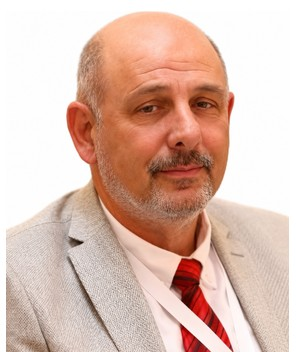

Profil
Lev Eppelbaum Tel-Əviv Universitetinin Geologiya elmləri departamentində çalışır. 1982-ci ildə Azərbaycan Dövlət Neft və Sənaye Universitetində geofizika üzrə magistr, 1989-cu ildə geofizika üzrə PhD dərəcəsi alıb. PhD Bakıdakı Ümumittifaq Geofizika İnstitutu, Tbilisidə Gürcüstan Elmlər Akademiyasının Geofizika İnstitutu və Moskva Mədən Akademiyası xətti ilə verilir. 1991–1993-cü illərdə Tel-Əviv Universitetində Ölü dəniz riftində potensial geofiziki sahələrin interpretasiyası və modelləşdirilməsi üzrə postdoktorantura keçib. 2020-ci ilin oktyabrından Azərbaycan Dövlət Neft və Sənaye Universitetinin fəxri professorudur. Google Scholar: 7.192 istinad; h-indeks 46. 2018–2019-cu illərdə Avropa Yer Elmləri İttifaqının Christian Huygens medalını alıb.
İş təcrübəsi
Tel-Əviv Universiteti, İsrail
iyul 1991–aprel 1995Tədqiqatçı
- Geofizika, atmosfer və planet elmləri
Azərbaycan Dövlət Neft və Sənaye Universiteti, Bakı, Azərbaycan
oktyabr 2020–hazırdaFəxri professor
Ümumittifaq Geofizika İnstitutu, Cənub filialı, Bakı, Azərbaycan
July 1983–March 1988Tədqiqatçı
- Qravitasiya və maqnitometriya
Əlvan və nadir metallar üzrə Ümumittifaq Geologiya İnstitutu, Cənub filialı, Bakı
September 1982–July 1983Geofizik
Əlvan və nadir metallar üzrə Ümumittifaq Geologiya İnstitutu
1977–1982Texnik və baş texnik, yay mövsümləri
Təhsil
Postdoktorantura
1991–1993Ölü dəniz riftində potensial geofiziki sahələrin interpretasiyası və modelləşdirilməsi. 1993-cü ildə tamamlanıb
Tel-Əviv Universiteti, İsrail
PhD
1985–1989Geofizika. 1989-cu ildə verilib
Ümumittifaq Geofizika İnstitutu, Bakı; Geofizika İnstitutu, Gürcüstan Elmlər Akademiyası, Tbilisi; Moskva Mədən Akademiyası
MSc
1977–1982Geofizika. 1982-ci ildə verilib
Azərbaycan Dövlət Neft və Sənaye Universiteti, Bakı, Azərbaycan
Elmi göstəricilər
- Google Scholar istinadları — 7192 — Özü tərəfindən
- Google Scholar h-indeksi — 46 — Özü tərəfindən
- ResearchGate oxunmaları — 253900 — Özü tərəfindən
Nəşrlər
Kitablar və dərsliklər
1. Khesin, B.E., Alexeyev, V.V. and Eppelbaum, L.V., 1996. Interpretation of Geophysical Fields in Complicated Environments. Kluwer Academic Publishers (Springer), Ser.: Modern Approaches in Geophysics, Boston – Dordrecht – London, 368 p. The positive reviews of the book were published in: (1) “The Leading Edge” (USA), 1997, 16, No.4, p.404 (2) “Book Choice” (USA), 1997, 34, No.6, Sci. & Tech., 34-3320, QC808. (3) “Inverse Problems”, 1997, 13, No. 3, 883, doi: 10.1088/0266-5611/13/3/021 as well “Tel Aviv University News”, Fall 1996, p.17.
2. Aleinikov, A.L., Belikov, V.T. and Eppelbaum, L.V., 2001. Some Physical Foundations of Geodynamics (in Russian, contents, and summary in English). Kedem Printing-House, Tel Aviv, Israel, 172 p. The positive review to the book was published in: (1) “Scientific Israel”, 2002, No.3-4, p.141
3. Pilchin, A.N. and Eppelbaum, L.V., 2006. Iron and its Unique Role in the Earth Evolution. Monogr., Mexican Geoph. Soc., 67 p.
4. Eppelbaum, L.V. and Khesin, B.E., 2012. Geophysical Studies in the Caucasus. Springer, Heidelberg – N.Y., 411 p.
5. Eppelbaum, L.V., Kutasov, I.M. and Pilchin, A.N., 2014. Applied Geothermics. Springer, Heidelberg – N.Y., 751 p.
6. Kutasov, I.M. and Eppelbaum, L.V., 2015. Pressure and Temperature Well Testing. CRC Press (Taylor and Francis Inc), 325 p.
7. Alizadeh, A.A., Guliyev, I.S., Kadirov, F.A., and Eppelbaum, L.V., 2016. Geosciences in Azerbaijan. Volume I: Geology. Springer, Heidelberg – N.Y., 239 p. The positive review of the book was published in: Zentralblatt für Geologie und Paläontologie, Teil II. № 1-2, 1-2, 2017.
8. Alizadeh, A.A., Guliyev, I.S., Kadirov, F.A., and Eppelbaum, L.V., 2017. Geosciences in Azerbaijan. Volume II: Economic Minerals and Applied Geophysics. Springer, Heidelberg – N.Y., 340 p.
9. Eppelbaum, L.V., 2019. Geophysical Potential Fields: Geological and Environmental Applications. Elsevier, Amsterdam – N.Y., 467 p.
10. Ezersky, M., Eppelbaum, L.V. and Legchenko, A., 2023. Applied Geophysics for Karst and Sinkhole Investigations: The Dead Sea and Other Regions. IOP (Institute of Physics Publishing), Bristol, UK, 639 p.
11. Alizadeh, A.A., Guliyev, I.S., Mamedov, P.Z., Aliyeva, E.G.-M., Feyzullayev, A.A., Huseynov, D.A. and Eppelbaum, L.V., 2024. Pliocene Hydrocarbon Sedimentary Series of Azerbaijan. Springer, Heidelberg – N.Y., 514 p. 17
Kitab fəsilləri
1. Khesin, B.E., Alexeyev, V.V. and Eppelbaum, L.V., 1988. Optimization of geophysical investigations in mountainous regions by increasing the effectiveness of interpretation. In: Optimization of Prospecting for Economic Ore Minerals in Mountainous Regions (in Russian). Moscow, Nedra, 79-122.
2. Eppelbaum, L.V., 1999. Interpretation of Temperature Surveys in Shallow Wells, In: Applied Geothermics for Petroleum Engineers, Elsevier, 274-301.
3. Eppelbaum, L.V. and Itkis, S.E., 2000. Magnetic investigations in the Proto-Historic site to the east of Tel Megiddo, In (Eds. I. Finkelstein, D. Ussishkin and B. Halpern), Monograph Series of the Inst. of Archaeology, Emery and Claire Yass Publications in Archaeology, Tel Aviv University, “Megiddo III”, Monogr. Ser. No. 18, 504-514.
4. Pilchin, A.N. and Eppelbaum, L.V., 2009. The Early Earth and Formation of the Lithosphere, In: (Eds. Anderson, J.E. and Coates, R.W.), The Lithosphere: Geochemistry, Geology and Geophysics, Nova Science Publishers, N.Y., USA, 1-69.
5. Itkis, S.E. and Eppelbaum, L.V., 2009. Magnetic survey in the vicinity of the Paneas. In: (Ed. M. Hartal) Paneas: The Survey, the Aqueduct, the northern cemeteries, and excavations in the northwestern Suburb. The Israel Antique Authority, Jerusalem, 143-151.
6. Eppelbaum, L.V., Itkis, S.E. and Gopher, A., 2012. Interpreting magnetic data at Nahal- Zehora II, In: (Ed. A. Gopher), Monograph Series of the Inst. of Archaeology, Emery and Claire Yass Publications in Archaeology, Tel Aviv University, “The Nahal-Zehora sites – Pottery Neolithic Villages in the Menashe Hills”, Monogr. Ser. No. 19, 315-331.
7. Pilchin, A.N. and Eppelbaum, L.V., 2012. The Early Earth, Formation and Evolution of the Lithosphere in the Hadean – Middle Archean, In: (Eds. Sato, F. and Nakamura, S.) Encyclopedia of Earth Science Research (3 Volume Set), Ser.: Earth Sciences in the 21st Century, Nova Science Publishers, N.Y., USA, 1-93.
8. Itkis, S.E. and Eppelbaum, L.V., 2013. Magnetic Prospecting to the North of the Late Bronze City Gate, In: (Ed. I. Finkelstein), “Megiddo-V: 2004-2008 seasons”, Emery and Claire Yass Publications in Archaeology, 1295-1313.
9. Eppelbaum, L.V. and Katz, Yu.I., 2015. Paleomagnetic Mapping in Various Areas of the Easternmost Mediterranean Based on an Integrated Geological-Geophysical Analysis. In: (Eppelbaum L., Ed.), New Developments in Paleomagnetism Research, Ser: Earth Sciences in the 21st Century, Nova Science Publisher, NY, 15-52.
10. Eppelbaum, L.V., 2017. Satellite Gravimetry ('Big Data'): A Powerful Tool for Regional Tectonic Examination and Reconstructions, In: (Eds. Veress, B. and Szigethy, J.), Horizons in Earth Science Research. Vol. 17, Nova Science Publishers, N.Y., 54-86.
11. Eppelbaum, L., 2020. Theories of Probability, Information, and Graphs in Applied Geophysics. In: (K. Kyamakya, Ed.), Prime Archives in Applied Mathematics, Vide Leaf, 1
12. Eppelbaum, L.V. and Katz, Yu.I., 2021. Deep Tectono-Geodynamic Aspects of Development of the Nubian-Arabian Region. In: The Arabian Seas Biodiversity, Environment Challenges and Conservation Measures (Ed. L. Jawad), Springer, 199-237. 18
13. Eppelbaum, L.V., 2021. Advanced analysis of self-potential anomalies: Review of case studies from mining, archaeology, and environment, In: (A. Biswas, Ed.), "Self-Potential Method: Theoretical Modeling and Applications in Geosciences", Springer, 203-248.
14. Eppelbaum, L.V., 2022. System of Potential Geophysical Field Application in Archaeological Prospection, In: (S. D'Amico and V. Venuti, Eds.), Handbook on Cultural Heritage Analysis, Springer, 771-809.
15. Eppelbaum, L.V., Katz, Y.I. and Ben-Avraham, Z., 2022. Advanced combined geophysical- geological mapping of the Sea of Galilee and its vicinity, In: (A. di Mauro, A. Scozzari, S. Soldovieri, Eds.), Instrumentation and Measurement Technologies for Water Cycle Management, Springer, 553-579.
16. Aleinikov, A.L., Belikov, V.T., Eppelbaum, L.V. and Nemzorov, N.T, 2023. Rock destruction and dangerous geodynamic processes in the Earth: A review. In: (Ed. S. Tüzemen) Fundamental Research and Application of Physical Science, BP International, London, 141
17. Eppelbaum, L.V. and Katz, Yu.I., 2024. African-Levantine Areal of Ancient Hominin Dispersal: A New Look Derived from Comprehensive Geological-Geophysical Integration. In: (A.F. Yousef, Ed.) Emerging Issues in Environment, Geography and Earth Science, Vol. 7, BP International, London, 151-222. 19
Rəylənmiş (peer-reviewed) jurnal məqalələri
1. Eppelbaum, L.V., 1984. A correlation method for eliminating topographic effect in the VLF- method (in Russian). Deposited by VINITI, USSR Academy of Sciences, No. 6492-84, 1-14.
2. Khesin, B.E. and Eppelbaum, L.V., 1985. Limitation of the number of methods involved in the set of geophysical methods for searching useful deposits (in Russian). Baku, IL AzNIINTI, No. 21, 1-4.
3. Bashirov, A.E., Mishne, L.R. and Eppelbaum, L.V., 1986. Linear filtering geophysical fields with dependent noise (in Russian). Baku, IL AzNIINTI, No. 16, 1-2.
4. Alexeyev, V.V., Khesin, B.E. and Eppelbaum, L.V., 1986. Methods for quantitative interpretation of VLF-curves under conditions of rugged relief (in Russian). Baku, IL AzNIINTI, No. 6, 1-4.
5. Khesin, B.E. and Eppelbaum, L.V., 1986. Optimization of the set of methods in the geophysical integration by searching economic minerals (in Russian). Izvestiya AN Azerb. SSR, Ser. Nauki o Zemle, No. 1, 89-93.
6. Eppelbaum, L.V., 1987. Multimodel approach to the study of geophysical targets (in Russian). Deposited by VINITI, USSR Academy of Sciences, No. 7842-87, 1-10.
7. Khesin, B.E. and Eppelbaum, L.V., 1988. Methods of quantitative interpreting the data of near-surface thermal prospecting under complicated physical-geological conditions (in Russian). Baku, IL AzNIINTI, No. 19, 1-4.
8. Eppelbaum, L.V. and Mishne, L.R., 1988. Some theoretical aspects of optimal filtration of geophysical signals with dependent noises (in Russian). Deposited by VINITI, USSR Academy of Sciences, No. 6034-B88, 1-10.
9. Eppelbaum, L.V., 1991. Examples of terrain corrections in the VLF-method in the Caucasian region, USSR. Geoexploration, 28, 67-75.
10. Bashirov, A.E., Eppelbaum, L.V. and Mishne, L.R., 1992. Improving Eötvös corrections by wide-band noise Kalman filtering. Geophysical Journal International, 108, 1, 193-197.
11. Eppelbaum, L.V. and Khesin, B.E., 1992. VLF-method: elimination of noises and quantitative interpretation. Collection of papers. Regional Symposium on Electromagnetic Compatibility “1992 − From a Unified Region to a Unified World”, Section “LF to ULF” Electromagnetics and the Earth, 5.2.1, IEEE Publ., Tel Aviv, 1-6.
12. Khesin, B.E., Alexeyev, V.V. and Eppelbaum, L.V., 1993. Investigation of geophysical fields in pyrite deposits under mountainous conditions. Journal of Applied Geophysics, 31, 187-205.
13. Khesin, B.E., Alexeyev, V.V. and Eppelbaum, L.V., 1993. 3-D modeling of gravity and magnetic fields as a final stage of application of effective interpretation system of geophysical data under difficult geological conditions. Geoinformatics, 4, No.3, 177-188.
14. Khesin, B.E. and Eppelbaum, L.V., 1994. Near-surface thermal prospecting: Review of processing and interpretation. Geophysics, 59, No.5, 744-752. 20
15. Eppelbaum, L.V., Modelevsky, M.M. (Jr.) and Pilchin, A.N., 1996. Thermal investigation in petroleum geology: the experience of implication in the Dead Sea Rift zone, Israel. Journal of Petroleum Geology, 19, No. 4, 425-444.
16. Pilchin, A.N. and Eppelbaum, L.V., 1997. Determination of magnetized bodies’ lower edges by using geothermal data. Geophysical Journal International, 128, No. 1, 167-174.
17. Khesin, B.E. and Eppelbaum, L.V., 1997. The number of geophysical methods required for target classification: quantitative estimation. Geoinformatics, 8, No. 1, 31-39.
18. Khesin, B.E., Alexeyev, V.V. and Eppelbaum, L.V., 1997. Rapid methods for interpretation of induced polarization anomalies. Journal of Applied Geophysics, 37, No. 2, 117-130.
19. Finkelstein, M., Brenner, S., Eppelbaum, L. and Ne’eman, E., 1998. Identification of anomalous radon concentration due to geodynamic processes by elimination of Rn variations caused by other factors. Geophysical Journal International, 133, No. 2, 407-412.
20. Itkis, S.E. and Eppelbaum, L.V., 1998. First results of magnetic prospecting application at the Prehistoric sites of Israel. Journal of the Prehistoric Society of Israel, 28, 177-187.
21. Eppelbaum, L.V. and Finkelstein, M.I., 1998. Radon emanation, magnetic, and VLF temporary variations: removing components not associated with dynamic processes. Collection of Selected Papers of the XXVI General Assembly of the European Seismological Commission (Tel Aviv, Israel), 122-126.
22. Kardashov, V., Einav, S., Eppelbaum, L. and Ismail-Zadeh, A., 1999. A novel approach to investigation and control of nonlinear nonstationary processes: application to environments and biomedical engineering. Scientific Israel, No. 3, 24-33.
23. Eppelbaum, L.V., Itkis, S.E. and Petrov, A.V., 2000. Physics and archaeology: magnetic field as a reliable tool for searching ancient remains in Israel. Scientific Israel, No. 2, 68-78.
24. Kutasov, I.M., Eppelbaum, L.V. and Dorofeyeva, R.P., 2000. Physical-mathematical problem of the recent climate reconstruction from subsurface temperature logs. Scientific Israel, No. 2, 79-83.
25. Eppelbaum, L.V., 2000. Applicability of geophysical methods for localization of archaeological targets: An introduction. Geoinformatics, 11, No. 1, 19-28.
26. Eppelbaum, L.V., Itkis, S.E. and Khesin, B.E., 2000. Optimization of magnetic investigations in the archaeological sites in Israel, In: Special Issue of Prosperzioni Archeologiche “Filtering, Modeling, and Interpretation of Geophysical Fields at Archaeological Objects”, 65-92.
27. Eppelbaum, L.V., 2000. Detailed geophysical investigations at archaeological sites, In: (Ed. A. Nissenbaum), Relation between archaeology and other scientific disciplines, Collection of Papers, Weitzman Inst., No. 8, 39-54 (in Hebrew).
28. Kardashov, V.R., Eppelbaum, L.V. and Vasilyev, O.V., 2000. The role of nonlinear source terms in geophysics. Geophysical Research Letters, 27, No. 14, 2069-2073.
29. Aleinikov, A.L., Belikov, V.T., Eppelbaum, L.V. and Nemzorov, N.I., 2000. Rock destruction and metamorphic processes in the Earth: A view from classical physics. Scientific Israel, No. 3, 65-87. 21
30. Eppelbaum, L.V., Khesin, B.E. and Itkis, S.E., 2001. Prompt magnetic investigations of archaeological remains in areas of infrastructure development: Israeli experience. Archaeological Prospection, 8, No. 3, 163-185.
31. Kutasov, I.M. and Eppelbaum, L.V., 2001. Determination of undisturbed formation temperature from logs in superdeep wells. Scientific Israel, No. 2, 12-19.
32. Ben-Avraham, Z., Ginzburg, A., Makris, J. and Eppelbaum, L., 2002. Crustal structure of the Levant basin, Eastern Mediterranean. Tectonophysics, 346, 23-43.
33. Pilchin, A.N. and Eppelbaum, L.V., 2002. Some peculiarities of thermodynamic conditions in the Earth’s crust and upper mantle. Scientific Israel, Nos. 1-2, 117-142.
34. Eppelbaum, L.V., Vaksman, V.L., Klepatch, C.A., Modin, I., Kouznetsov, S.V., Surkov, A.V., Korotaeva, N.N., Smirnov, S.A. and Bezlepkin, B.A., 2002. Discovering of diamondiferous association in the Makhtesh Ramon area, Negev desert (Southern Israel). Romanian Journal of Mineral Deposits, 80, 25-28.
35. Eppelbaum, L., Ben-Avraham, Z. and Itkis, S., 2003. Ancient Roman Remains in Israel provide a challenge for physical-archaeological modeling techniques. First Break, 21 (2), 51
36. Eppelbaum, L., Eppelbaum, V. and Ben-Avraham, Z., 2003. Formalization and estimation of integrated geological investigations: Informational Approach. Geoinformatics, 14, No. 3, 233
37. Kutasov, I.M. and Eppelbaum, L.V., 2003. Prediction of formation temperatures in permafrost regions from temperature logs in deep wells – field cases. Permafrost and Periglacial Processes, 14, No. 3, 247-258.
38. Eppelbaum, L.V., Kouznetsov, S.V., Vaksman, V.L., Klepatch, C.A., Smirnov, S.A., Sazonova, L.M., Korotaeva, N.N., Surkov, A.V., Itkis, S.E. and Shemesh, M., 2003. Results of integrated geological-geophysical examination of Makhtesh Ramon area (southern Israel) on diamond-bearing associations. Collection of Selected Papers of the SPIE Conference, Section: Geology and Remote Sensing, Barcelona, Spain, 109-120.
39. Itkis, S., Khesin, B., Eppelbaum, L. and Khalaily, H., 2003. The Natufian site of Eynan (Hula Valley, northern Israel): Magnetic prospecting reveals new features. Israel Journal of Earth Sciences, 52, Nos. 3-4, 209-219.
40. Eppelbaum, L., Ben-Avraham, Z., Katz, Y. and Marco, S., 2004. Sea of Galilee: Comprehensive analysis of magnetic anomalies. Israel Journal of Earth Sciences, 53, No. 3, 151-171.
41. Eppelbaum, L.V. and Khesin, B.E., 2004. Advanced 3-D modelling of gravity field unmasks reserves of a pyrite-polymetallic deposit: A case study from the Greater Caucasus. First Break, 22, No. 11, 53-56.
42. Eppelbaum, L., Ben-Avraham, Z. and Katz, Y., 2004. Integrated analysis of magnetic, paleomagnetic and K-Ar data in a tectonic complex region: an example from the Sea of Galilee. Geophysical Research Letters, 31, No. 19, L19602.
43. Pilchin, A.N. and Eppelbaum, L.V., 2004. On the stability of ferrous and ferric iron oxides 22 and its role in rocks and rock-forming minerals stability. Scientific Israel, 6, No.3-4, 119-136.
44. Samykina, E., Surkov, A., Eppelbaum, L. and Semenov, S., 2005. Do old spoils contain large amounts of economic minerals? Minerals Engineering, 18, No. 6, 643-645.
45. Kutasov, I.M. and Eppelbaum, L.V., 2005. Drawdown test for a stimulated well produced at a constant bottomhole pressure. First Break, 23, No. 2, 25-28.
46. Kutasov, I.M. and Eppelbaum, L.V., 2005. Determination of formation temperature from bottom-hole temperature logs – a generalized Horner method. Journal of Geophysics and Engineering, 2, 90-96.
47. Pilchin, A.N. and Eppelbaum, L.V., 2005. On the role of thermodynamic conditions in rocks and minerals stability. Scientific Israel, 7, No. 2, 88-105.
48. Berkovitch, A., Binkin, I., Eppelbaum, L., Scharff, N. and Guberman, E., 2005. Integration of advanced multifocusing seismics with potential field analysis: Heletz oil field (central Israel) example. Journal of the Balkan Geophysical Society, 8, Suppl. 1, 593-596.
49. Finkelstein, M., Eppelbaum, L. and Price, C., 2006. Analysis of temperature influences the amplitude-frequency of Rn gas concentration. Journal of Environmental Radioactivity, 86, No. 2, 251-270.
50. Eppelbaum, L.V., Khesin, B.E. and Itkis, S.E., 2006. Some peculiarities of geophysical investigations at archaeological sites in Israel. Russian Archaeology, No. 1, 59-70.
51. Eppelbaum, L.V. and Kutasov, I.M., 2006. Temperature and pressure drawdown well testing: Similarities and differences. Journal of Geophysics and Engineering, 3, No. 1, 12-20.
52. Eppelbaum, L.V., Vaksman, V.L., Kouznetsov, S.V., Sazonova, L.M., Smirnov, S.A., Surkov, A.V., Bezlepkin, B., Katz, Y., Korotaeva, N.N., and Belovitskaya, G., 2006. Discovering of microdiamonds and minerals-satellites in Canyon Makhtesh Ramon (Negev desert, Israel). Doklady Earth Sciences (Springer), 407, No. 2, 202-204.
53. Neishtadt, N., Eppelbaum, L. and Levitski, A., 2006. Application of seismo-electric phenomena in exploration geophysics: Review of Russian and Israeli experience. Geophysics, 71, No. 2, B41-B53.
54. Eppelbaum, L.V. and Pilchin, A.N., 2006. Methodology of Curie discontinuity map development for regions with low thermal characteristics: An example from Israel. Earth and Planetary Sciences Letters, 243, Nos. 3-4, 536-551.
55. Eppelbaum, L.V., Kutasov, I.M. and Barak, G., 2006. Ground surface temperature histories inferred from 15 boreholes temperature profiles: Comparison of two approaches. Earth Sciences Research Journal, 10, No. 1, 25-34.
56. Eppelbaum, L.V. and Kutasov, I.M., 2006. Determination of formation temperatures from temperature logs in deep boreholes: comparison of three methods. Journal of Geophysics and Engineering, 3, No. 4, 348-355.
57. Eppelbaum, L.V., Ben-Avraham, Z. and Katz, Y.I., 2007. Structure of the Sea of Galilee and Kinarot Valley derived from combined geological-geophysical analysis. First Break, 25, No. 1, 21-28. 23
58. Kutasov, I.M. and Eppelbaum, L.V., 2007. Temperature well testing – utilization of the Slider’s method. Journal of Geophysics and Engineering, 4, No. 1, 1-6.
59. Pilchin, A.N. and Eppelbaum, L.V., 2007. Stabilities of the iron oxides in the Earth and their role in the formation of rock magnetism. Acta Geofisica, 55, No. 2, 133-153.
60. Eppelbaum, L.V., 2007. Localization of Ring Structures in Earth’s Environments. Jour. of the Archaeological Soc. of the Slovakian Acad. of Sci., Spec. Issue: Arch. Prosp., XLI, 145
61. Kutasov, I.M., Eppelbaum, L.V. and Kagan, M., 2008. Interference well testing – variable fluid flow rate. Journal of Geophysics and Engineering, 5, No. 1, 86-91.
62. Surkov, A., Samykina, E., Eppelbaum, L. and Semenov, S., 2008. The Main Reason for Mineral Loss in Gravity Dressing. The Open Mineral Processing Journal, 1, 37-44.
63. Balobaev, V.T., Kutasov, I.M. and Eppelbaum, L.V., 2008. Borehole paleoclimatology – the effect of deep lakes and “heat islands” on temperature profiles. Climate of the Past Discussions, 4, 1-18.
64. Eppelbaum, L.V., Ezersky, M.G., Al-Zoubi, A.S., Goldshmidt, V.I. and Legchenko, A., 2008. Study of the factors affecting the karst volume assessment in the Dead Sea sinkhole problem using microgravity field analysis and 3D modeling. Advances in GeoSciences, 19, 97-115.
65. Berkovitch, A.L. and Eppelbaum, L.V., 2009. From seismic inversion to applied optics: A novel approach to the design of complex systems. Scientific Israel, No. 2, 12-26.
66. Balobaev, V.T., Kutasov, I.M. and Eppelbaum, L.V., 2009. The maximum effect of deep lakes on temperature profiles – determination of the geothermal gradient. Earth Sciences Research Journal, 13, No. 1, 54-63.
67. Kutasov, I.M. and Eppelbaum, L.V., 2009. Estimation of the geothermal gradients from single temperature log-field cases. Journal of Geophysics and Engineering, 6, No. 2, 131-135.
68. Eppelbaum, L.V., 2009. Near-surface temperature survey: An independent tool for buried archaeological targets delineation. Journal of Cultural Heritage, 12, Suppl.1, e93-e103.
69. Ezersky, M., Legchenko, A., Camerlynck, C., Al-Zoubi, A., Eppelbaum, L. and Keydar, S., 2010. The Dead Sea sinkhole hazards – new findings based on the multidisciplinary geophysical study. Zeitschrift für Geomorphologie, 54, Suppl. 2, 54-89.
70. Eppelbaum, L.V., Khesin, B.E. and Itkis, S.E., 2010. Archaeological geophysics in arid environments: Examples from Israel. Journal of Arid Environments, 74, No. 7, 849-860.
71. Kutasov, I.M. and Eppelbaum, L.V., 2010. A new method for determination of formation temperature from bottom-hole temperature logs. Jour. of Petroleum and Gas Engineering, 1, No. 1, 1-8.
72. Eppelbaum, L.V., 2010. Archaeological geophysics in Israel: Past, Present, and Future. Advances in Geosciences, 24, 45-68. 24
73. Nusinov, M., Kardashov, V. and Eppelbaum, L., 2010. Informational evolution of the Universe: Two approaches to the living system evolution. Scientific Israel, 13, Nos. 3-4, 166
74. Proto, M., Bavusi, M., Bernini, R., Bigagli, L., Bost, M., Bourquin, F., Cottineau, L.-M., Cuomo, V., Vecchia, P.D., Dolce, M., Dumoulin, J., Eppelbaum, L., Fornaro, C., Gustafsson, M., Hugenschimdt, J., Kaspersen, P., Kim, H., Lapenna, V., Leggio, M., Loperte, A., Mazzetti, P., Moroni, C., Nativi, S., Nordebo, S., Pacini, F., Palombo, A., Pascucci, S., Perrone, A., Pignatti, S., Ponzo, F.C., Rizzo, E., Soldovieri, F. and Taillade, F., 2010. Transport infrastructure surveillance and monitoring by electromagnetic sensing: the ISTIMES project. Sensors, 10, 10620-10639.
75. Eppelbaum, L.V. and Kutasov, I.M., 2011. Estimation of the effect of thermal convection and casing on temperature regime of boreholes – a Review. Journal of Geophysics and Engineering, 8, R1-R10.
76. Eppelbaum, L. and Katz, Y., 2011. Tectonic-Geophysical Mapping of Israel and Eastern Mediterranean: Implication for Hydrocarbon Prospecting. Positioning, 2, No. 1, doi:
77. 4236/pos.2011.21004, 36-54.
78. Eppelbaum, L.V., 2011. Study of magnetic anomalies over archaeological targets in urban conditions. Physics and Chemistry of the Earth, 36, No. 16, 1318-1330.
79. Eppelbaum, L.V. and Kutasov, I.M., 2011. Determination of the formation temperature from shut-in logs: Radius of thermal influence. Journal of Applied Geophysics, 73, 278-282.
80. Eppelbaum, L.V., 2011. Review of environmental and geological microgravity applications and feasibility of their implementation at archaeological sites in Israel. International Journal of Geophysics, doi: 10.1155/2011/927080, ID 927080, 1-9.
81. Eppelbaum, L. and Khesin, B., 2011. Development of 3-D gravity-magnetic models of Earth’s crust of Azerbaijan and adjacent areas: A generalized review. Positioning, 2, No. 2, 84-102.
82. Eppelbaum, L.V. and Mishne, A.R., 2011. Unmanned Airborne Magnetic and VLF investigations: Effective Geophysical Methodology of the Near Future. Positioning, 2, No. 3, 112-133.
83. Eppelbaum, L.V. and Katz, Y.I., 2012. Mineral deposits in Israel: A contemporary view, In: (Eds. Ya’ari, A. and Zahavi, E.D.) Israel: Social, Economic and Political Developments, Nova Science Publishers, N.Y., USA, 1-41.
84. Kutasov, I.M. and Eppelbaum, L.V., 2012. New method evaluated the efficiency of wellbore stimulation. Oil & Gas Journal, 110, No. 8, 22-24.
85. Kutasov, I.M. and Eppelbaum, L.V., 2012. Geothermal investigations in permafrost regions – the duration of temperature monitoring after wellbores shut-in. Geomaterials, 2, No. 4, 82
86. Finkelstein, M., Price, C. and Eppelbaum, L., 2012. Is the geodynamic process in preparation of strong earthquakes reflected in the geomagnetic field? Journal of Geophysics and Engineering, 9, 585-594.
87. Eppelbaum, L.V. and Katz, Y.I., 2012. Key Features of Seismo-Neotectonic Pattern of the 25 Eastern Mediterranean. Izv. Acad. Sci. Azerb. Rep., Ser.: Earth Sciences, No. 3, 29-40.
88. Gadirov, V.G. and Eppelbaum, L.V., 2012. Detailed gravity, magnetics successful in exploring Azerbaijan’s onshore areas. Oil and Gas Journal, 110, No. 11, 60-73.
89. Eppelbaum, L.V., Katz, Y.I. and Ben-Avraham, Z., 2012. Israel – Petroleum Geology and Prospective Provinces. AAPG European Newsletter, No. 4, 4-9.
90. Neishtadt, N.M. and Eppelbaum, L.V., 2012. Perspectives of application of piezoelectric and seismoelectric methods in applied geophysics. Russian Geophysical Journal, Nos. 51-52, 63
91. Ezersky, M., Eppelbaum, L., Al-Zoubi, A., Keydar, S., Medvidiev, B., Akkawi, E., Abueladas, A.-R. and Al-Ruzouq, R., 2013. Geophysical prediction and following development sinkholes in two Dead Sea areas, Israel and Jordan. Environmental Earth Sciences, 70, No. 4, 1463-1478.
92. Kutasov, I.M. and Eppelbaum, L.V., 2013. Optimization of temperature observational well selection. Exploration Geophysics, 44, No. 3, 192-198.
93. Al-Zoubi, A., Eppelbaum, L., Abueladas, A., Ezersky, M. and Akkawi, E., 2013. Methods for removing regional trends in microgravity under complex environments: testing on 3D model examples and investigation in the Dead Sea coast. International Journal of Geophysics, Vol. 2013, Article ID 341797, 1-13, http://dx.doi.org/10.1155/2013/341797.
94. Alperovich, L., Eppelbaum, L., Zheludev, V., Dumoulin, J., Soldovieri, F., Proto, M., Bavusi, M. and Loperte, A., 2013. A new combined wavelet methodology applied to GPR and ERT data in the Montagnole experiment (French Alps). Journal of Geophysics and Engineering, 10, No. 2, 025017, 1-17.
95. Eppelbaum, L.V., 2013. Potential geophysical fields – inexpensive, effective interpretation tool at archaeological sites in the Near East. Izv. Acad. Sci. Azerb. Rep., Ser.: Earth Sciences, No. 3, 23-42.
96. Eppelbaum, L.V., 2013. Non-stochastic long-term prediction model for US tornado level. Natural Hazards, 69, No. 3, 2269-2278.
97. Kutasov, I.M. and Eppelbaum, L.V., 2013. Cementing of casing: the optimal time lapse to conduct a temperature log. Oil Gas European Magazine, 39, No. 4, 190-193.
98. Eppelbaum, L.V. and Kutasov, I.M., 2013. Cylindrical probe with a variable heat flow rate: A new method for determination of the formation thermal conductivity. Central European Journal of Geosciences, 5, No. 4, 570-575.
99. Eppelbaum, L.V., 2014. Geophysical observations at archaeological sites: Estimating informational content. Archaeological Prospection, 21, No. 2, 25-38.
100. Eppelbaum, L.V., Nikolaev, A.V. and Katz, Y.I., 2014. Space location of the Kiama paleomagnetic hyperzone of inverse polarity in the crust of the eastern Mediterranean. Doklady Earth Sciences (Springer), 457, No. 6, 710-714. 26
101. Eppelbaum, L.V., 2014. Four Color Theorem and Applied Geophysics. Applied Mathematics, 5, 358-366.
102. Ezersky, M., Eppelbaum, L., Al-Zoubi, A., Keydar, S., Medvidiev, B., Akkawi, E., Abueladas, A.-R. and Al-Ruzouq, R., 2014. Comments to the publication of D. Closson and N. Abu Karaki ‘‘Sinkhole hazards prediction at Ghor Al Haditha, Dead Sea, Jordan: ‘‘Salt Edge’’ and ‘‘Tectonic’’ models contribution’’— a rebuttal to ‘‘Geophysical prediction and following development sinkholes in two Dead Sea areas, Israel and Jordan”. Environmental Earth Sciences, 71, No. 4, 1989-1993.
103. Eppelbaum, L.V., Zheludev, V. and Averbuch, A., 2014. Diffusion maps as a powerful tool for integrated geophysical field analysis to detecting hidden karst terranes. Izv. Acad. Sci. Azerb. Rep., Ser.: Earth Sciences, Nos. 1-2, 36-46.
104. Klokočník, J., Kostelecký, J., Eppelbaum, L. and Bezděk, A., 2014. Gravity Disturbances, the Marussi Tensor, Invariants and Other Functions of the Geopotential Represented by EGM 2008. Journal of Earth Science Research, 2, No. 3, 88-101.
105. Eppelbaum, L.V., 2014. Estimating informational content in geophysical observations on an example of searching economic minerals in Azerbaijan. Izv. Acad. Sci. Azerb. Rep., Ser.: Earth Sciences, Nos. 3-4, 31-40.
106. Eppelbaum, L.V. and Katz, Yu.I., 2015. Newly Developed Paleomagnetic Map of the Easternmost Mediterranean Unmasks Geodynamic History of this Region. Central European Jour. of Geosciences (Open Geosciences), 7, No. 1, 95-117.
107. Eppelbaum, L.V. and Katz, Yu.I., 2015. Eastern Mediterranean: Combined geological- geophysical zonation and paleogeodynamics of the Mesozoic and Cenozoic structural- sedimentation stages. Marine and Petroleum Geology, 65, 198-216.
108. Eppelbaum, L.V., 2015. Quantitative interpretation of magnetic anomalies from thick bed, horizontal plate, and intermediate models under complex physical-geological environments in archaeological prospection. Archaeological Prospection, 23, No. 2, 255-268.
109. Gadirov V. and Eppelbaum, L.V., 2015. Density-thermal dependence of sedimentary associations calls for reinterpreting detailed gravity surveys. Annales Geophysicae, 58, No. 1, 1-6.
110. Eppelbaum, L.V., 2015. Comparison of 3D integrated geophysical modeling in the South Caucasian and Eastern Mediterranean segments of the Alpine-Himalayan tectonic belt. Izv. Acad. Sci. Azerb. Rep., Ser.: Earth Sciences, No. 3, 25-45.
111. Eppelbaum, L. and Isakov, A., 2015. Implementation of the geo-correlation methodology for predictability of catastrophic weather events: long-term US tornado season and short-term hurricanes. Environmental Earth Sciences, 74, 3371-3383.
112. Eppelbaum, L.V., 2015. Quantitative interpretation of magnetic anomalies from bodies approximated by thick bed models in complex environments. Environmental Earth Sciences, 74, 5971-5988.
113. Eppelbaum, L.V. and Katz, Yu.I., 2016. Tectono-Geophysical Zonation of the Near and Middle East and Eastern Africa. International Journal of Geology, 10, 1-10. 27
114. Golubkov, G.V., Manzhelii, M.I., Berlin, A.A., Lushnikov, A.A. and Eppelbaum, L.V., 2016. Influence of D and E atmospheric layers on the propagation of radio waves and satellite signals. Journal of Lasers, Optics & Photonics, 3, No. 3, 89.
115. Kutasov, I.M. and Eppelbaum, L.V., 2016. Prediction of Hydrostatic Pressure and Downhole Mud Temperatures While Drilling. International Jour. of Petroleum Technology, 2, No. 2, 53
116. Eppelbaum, L.V. and Vaksman, V.L., 2017. Makhtesh Ramon Complex Deposit (Southern Israel) – A Window to the Upper Mantle. Intern. Journal of Mining Sciences, 3, No. 1, 1-28.
117. Pilchin, A.N. and Eppelbaum, L.V., 2017. Concentration of Platinum Group Elements during the Early Earth Evolution: A Review. Natural Resources, 8, 172-233.
118. Eppelbaum, L.V. and Katz, Yu.I., 2017. Satellite gravimetry as a powerful tool for delineation of regional tectono-geophysical domains: Implementation for the Arabian-African region. Izv. Acad. Sci. Azerb. Rep., Ser.: Earth Sciences, Nos. 1-2, 45-58.
119. Eppelbaum, L.V. and Kutasov, I.M., 2017. Step temperature well testing. International Journal of Petrochemical Science & Engineering, 2, No. 3, 1-4.
120. Eppelbaum, L.V. and Katz, Yu.I., 2017. A New Regard on the Tectonic Map of the Arabian- African Region Inferred from the Satellite Gravity Analysis. Acta Geophysica, 65, 607-626.
121. Ezersky, M., Legchenko, A., Eppelbaum, L. and Al-Zoubi, A., 2017. Overview of the geophysical studies in the Dead Sea coastal area related to evaporite karst and recent sinkhole development. International Journal of Speleology, 46, No. 2, 277-302.
122. Kutasov, I.M. and Eppelbaum, L.V., 2017. Time of Refreezing of Surrounding the Wellbore Thawed Formations. International Journal of Thermal Sciences, 122, 133-140.
123. Ezersky, M. and Eppelbaum, L., 2017. Geophysical monitoring of underground constructions and its theoretical basis. International Jour. of Georesources and Environment, 3, No. 2, 56-72.
124. Eppelbaum, L.V., 2017. Quantitative Examination of Piezoelectric/Seismoelectric Anomalies from Near-Surface Targets. Geosciences, 7, 90, 1-12.
125. Eppelbaum, L.V., 2017. From Micro- to Satellite Gravity: Understanding the Earth. American Jour. of Geographic Research and Review, 1, No. 3, 1-34.
126. Dobrzhinetskaya, L., Mukhin, P., Wang, Q., Wirth, R., O'Bannon, E., Zhao, W., Eppelbaum, L. and Sokhonchuk, T., 2018. Moissanite (SiC) with metal-silicide and silicon inclusions from tuff of Israel: Raman spectroscopy and electron microscope studies. Lithos, 310-311, 355-368.
127. Berlin, A.A., Golubkov, G.V., Manzhelii, M.I., Morozov, A.N. and Eppelbaum, L.V., 2018. Problems of Satellite Navigation and Monitoring Earth's Surface. Herald of Bauman's Moscow State Technical Univ., Ser.: Natural Sciences, No. 1, 61-73.
128. Kutasov, I.M. and Eppelbaum, L.V., 2018. Utilization of the Horner plot for determining the temperature of frozen formations – A novel approach. Geothermics, 71, 259-263. 28
129. Eppelbaum, L., Katz, Yu., Klokochnik, J., Kosteletsky, J., Zheludev, V. and Ben-Avraham, Z., 2018. Tectonic Insights into the Arabian-African Region inferred from a Comprehensive Examination of Satellite Gravity Big Data. Global and Planetary Change, 171, 65-87.
130. Kutasov, I.M. and Eppelbaum, L.V., 2018. The effect of thermal properties changing (at ice- water transition) on the radius of permafrost thawing. Cold Regions Science and Technology, 151, 156-158.
131. Golubkov, G.V., Manzhelii, M.I. and Eppelbaum, L.V., 2018. Introduction to the quantum theory of distortion and delay of satellite radio signals. Physical Chemistry B (Springer), 12, No. 3, 178-201.
132. Golubkov, G.V., Manzhelii, M.I., Berlin, A.A., Lushnikov, A.A. and Eppelbaum, L.V., 2018. Effects of the Interaction of Microwave Radiation with the Atmosphere on the Passive Remote Sensing of the Earth’s Surface: Problems and Solutions (Review). Physical Chemistry B (Springer), 12, No. 4, 725-748.
133. Nikolaev, A., Gorkin, D., Eppelbaum, L.V., Manukov, P., Arnon, N., Libin, A. and Buloshnikov, A., 2018. Investigation of archaeological caves in Israel using high-frequency impulse electric prospecting. Doklady Earth Sciences (Springer), 482, No. 2, 1320-1323.
134. Meirova, T., Shapira, A. and Eppelbaum, L.V., 2018. PSHA in Israel using the synthetic ground motions from simulated seismicity: the modified SvE procedure. Journal of Seismology, 22, 1095-1111.
135. Golubkov, G.V., Manzhelii, M.I. and Eppelbaum, L.V., 2018. Quantum Theory of Disturbance and Delay of GPS Signals in D and E Atmospheric Layers: An Introduction. Positioning, 9, No. 2, 13-22.
136. Golubkov, G.V., Manzhelii, M.I. and Eppelbaum, L.V., 2018. Quantum Nature of Distortion and Delay of Satellite Signals II. Positioning, 9, No. 3, 47-72.
137. Pechersky, D.M. and Eppelbaum, L.V., 2018. Peering into the Past: What Happened to the Moon 3.6 Billion Years Ago? Positioning, 9, No. 3, 73-78.
138. Gadirov, V., Eppelbaum, L.V., Kuderavets, R., Menshov, O. and Gadirov, K., 2018. Indicative features of local magnetic anomalies from hydrocarbon deposits: Examples from Azerbaijan and Ukraine. Acta Geophysica, 66, 1463-1483.
139. Eppelbaum, L.V. and Kutasov, I.M., 2019. Well drilling in permafrost regions – dynamics of the thawed zone. Polar Research, 38, No. 2, 1-9.
140. Arsen'yev, S.A., Eppelbaum, L.V. and Meirova, T., 2019. Earthquakes: A view from synergetics and the theory of catastrophes. Pure and Applied Geophysics, 176, No. 8, 3377- 3390.
141. Arsen'yev, S.A., Eppelbaum, L.V. and Ermakova, N., 2019. Dangerous atmospheric events: A new physical-mathematical approach. Izv. Acad. Sci. Azerb. Rep., Ser.: Earth Sciences, No. 1, 11-24.
142. Kuverova, V.V. Adamson, S.O., Berlin, A.A., Bychkov, V.L., Dmitriev, A.V., Dyakov, Y.A., Eppelbaum, L.V., Golubkov, G.V., Lushnikov, A.A., Manzhelii, M.I., Morozov, A.N., 29 Nabiev, S.S., Suvorova, A.V., Golubkov, M.G., 2019. Chemical physics of D and E layers of the ionosphere. Advances in Space Research, 63, No. 14, 1876-1886.
143. Ezersky, M., Legchenko, A., Eppelbaum, L., Al-Zoubi, A., Abueladas, A-R.A., 2019. Comments to the publication of Polom et al., ‘Shear wave reflection seismic yields subsurface dissolution and subrosion patterns: application to the Ghor Al-Haditha sinkhole site, Dead Sea, Jordan', Solid Earth, 9, 1079-1098, 2018. Solid Earth, 1-4.
144. Eppelbaum, L.V., 2019. Advanced system of self-potential field analysis in ore deposits of the South Caucasus. Proceedings of the National Azerbaijan Academy of Sciences, No. 2, 21
145. Eppelbaum, L. and Katz, Yu., 2020. Significant tectono-geophysical features of the African- Arabian tectonic region: An overview. Geotectonics (Springer), 54, No. 2, 266-283.
146. Meirova, T., Hofstetter, A. and Eppelbaum, L.V., 2020. Characteristics of high-frequency attenuation in the Dead Sea basin. Journal of Seismology, 24, No. 3, 479-494.
147. Eppelbaum, L.V., Ben-Avraham, Z., Katz, Y., Cloetingh, S. and Kaban, M., 2020. Combined Multifactor Evidence of a Giant Lower-Mantle Ring Structure Below the Eastern Mediterranean. Positioning, 11, 11-32.
148. Arsen'yev, S.A., Eppelbaum, L.V. and Meirova, T.B., 2020. Discrete Mathematical Model of Earthquake Focus: An Introduction. Pure and Applied Geophysics, 177, 4097-4118.
149. Eppelbaum, L.V., 2020. Quantitative analysis of self-potential anomalies in archaeological sites of Israel: an overview. Environmental Earth Sciences, 79, 1-15.
150. Golubkov, G.V., Manzhelii, M.I., Berlin, A.A., Eppelbaum, L.V., Lushnikov, A.A., Morozov I.I., Dmitriev, A.V., Adamson, S.O., Dyakov, Y.A., Morozov, A.N. and Golubkov, M.G., 2020. The Problems of Passive Remote Sensing of the Earth’s Surface in the Range of
151. 2–1.6 GHz. Atmosphere, 11, 1-13.
152. Pilchin, A.N. and Eppelbaum, L.V., 2020. Plate tectonics and Earth evolution: A conceptual review. Proceedings of the National Azerbaijan Academy of Sciences, No. 2, 3-32.
153. Eppelbaum, L.V., Ben-Avraham, Z., Katz, Y., Cloetingh, S. and Kaban, M., 2021. Giant quasi-ring mantle structure in the African-Arabian junction: Results derived from the geological-geophysical data integration. Geotectonics (Springer), 55, No. 1, 67-93.
154. Ezersky, M., Eppelbaum, L. Legchenko, A., Al-Zoubi, A., Abueladas, A-R.A., 2021. Salt layer characteristics in the Ghor Al-Haditha area, Jordan: Comprehensive combined reprocessing of geophysical data. Environmental Earth Sciences, 80(124), 1-20.
155. Arsen'yev, S.A., Eppelbaum, L.V. and Ermakov, N.Yu., 2021. Proposed scheme for modeling of ocean equatorial currents in the phase of El Niño and La Niña: Implementation of the mesoscale turbulence theory. Dynamics of Atmospheres and Oceans, 94, 101220, 1-10.
156. Golubkov, G.V., Manzhelii, M.I., Berlin, A.A., Bezuglov, N.N., Klucharev, A.N., Borchevkina, A.P., Adamson, S.O., D’yakov, Yu.A., Karpov, I.V., Morozov, I.I., Eppelbaum, L.V., Golubkov, M.G., 2021. Remote Sensing of the Earth’s Surface Using GPS Signals. Russian Journal of Physical Chemistry (Springer), 15, 362-365. 30
157. Eppelbaum, L.V., 2021. Review of processing and interpretation of self-potential anomalies: Transfer of methodologies developed in magnetic prospecting. Geosciences, 11, No. 5, 1-33.
158. Arsen'yev, S.A. and Eppelbaum, L.V., 2021. Nonlinear model of coastal flooding by a highly turbulent tsunami. Journal of Nonlinear Mathematical Physics, 28, 436-451.
159. Eppelbaum, L.V., 2021. VLF-method of geophysical prospecting: A non-conventional system of processing and interpretation (implementation in the Caucasian ore deposits). Proceedings of the National Azerbaijan Academy of Sciences, No. 2, 16-38.
160. Eppelbaum, L. and Katz, Yu., 2021. Akchagylian Hydrospheric Phenomenon in Aspects of Deep Geodynamics. Stratigraphy and Sedimentation of Oil-Gas Basins, No. 2, 8-26.
161. Eppelbaum, L. and Katz, Yu., 2022. Combined Zonation of the African-Levantine- Caucasian Areal of Ancient Hominin: Review and Integrated Analysis of Paleogeographical, Stratigraphic and Geophysical-Geodynamical Data. Geosciences (Switzerland), 13, No. 1, 1
162. Eppelbaum, L.V. and Katz, Y.I., 2022. Paleomagnetic-geodynamic mapping of the transition zone from ocean to the continent: A review. Applied Sciences, 12, Spec. Issue: Advances in Applied Geophysics, 1-20.
163. Berkovitch, A.L. and Eppelbaum, L.V., 2022. Can Applied Optics Employ Modern Approaches Developed in Seismic Prospecting? A Review. Physics (MDPI), 4, 833-846.
164. Eppelbaum, L.V. and Katz, Y.I., 2022. Role of advanced paleomagnetic and paleogeographic studies for unmasking anthropological site structures: Implementation for the northern part of the Levantine Corridor. Preprint, 10.21203/rs.3.rs-1580989/v1
165. Eppelbaum, L.V. and Katz, Y.I., 2022. Tectonic magnetic-paleomagnetic mapping of heterogeneous media: Implication for the Easternmost Mediterranean (northern Israel). ANAS Proceedings, Earth Sciences, No. 2, 3-23.
166. Eppelbaum, L.V. and Katz, Y.I., 2023. A New Look to the Heletz–Ashdod Oil Field (Southern Israel): A Non-Conventional Hydrocarbon Deposit in the Easternmost Mediterranean. Geosciences (Switzerland), 13, No. 12, 1-25.
167. Eppelbaum, L.V. and Katz, Y.I., 2023. Multidisciplinary Geological-Geophysical Analysis Unmasks Anthropological Site Structure in the Northern Part of the Levantine Corridor. Journal of Anthropological and Archaeological Sciences, 8, No. 3, 1056-1078.
168. Kadirov, F.A., Klokočník, J., Eppelbaum L.V., Kostelecký, J. and Bezděk, A. 2023. Integration of the Bouguer gravity data with satellite gravity transformation integration in the Caspian region: An introduction. ANAS Transactions, Earth Sciences, No. 1, 11-16.
169. Arsen’yev, S.A. and Eppelbaum, L.V., 2023. The Behavior of Nonlinear Tsunami Waves Running on the Shelf. Applied Sciences, Special Issue “New Challenges in Seismic Hazard Assessment”, 13, 8112, 1-13. 31
170. Eppelbaum, L.V., Katz, Y.I., Kadirov, F.A. and Ben-Avraham, Z., 2023. The enormous Earth’s crust tension and hydrocarbon pipeline exploration in the South Caucasus – Eastern Mediterranean. ANAS Transactions, Earth Sciences, No. 3, 80-85.
171. Eppelbaum, L.V., Katz, Y.I. and Ben-Avraham, Z., 2023. Why Did Such Giant Stress Accumulate on the Joining of Four Tectonic Plates in Eastern Turkey? A Review. Preprints, https://doi.org/10.20944/preprints202308.1252.v1
172. Eppelbaum, L.V., 2023. The possibility to estimate in situ the porosity of permafrost: A preliminary study. Preprints, https://doi.org/10.20944/preprints202308.1543.v1
173. Eppelbaum, L.V., Katz, Y.I. and Ben-Avraham, Z., 2023. Geodynamic aspects of magnetic data analysis and tectonic-paleomagnetic mapping in the Easternmost Mediterranean: A review. Applied Sciences, Spec. Issue “Ground-Based Geomagnetic Observations: Techniques, Instruments and Scientific Outcomes”, 13, No. 18, 1-44.
174. Eppelbaum, L.V., Katz, Y.I. and Ben-Avraham, Z., 2024. The reasons for enormous accumulation of the geodynamic tension in Eastern Turkey: a multidisciplinary study. Geology Geophysics and Earth Science, 2, No. 2, 1-28.
175. Eppelbaum, L.V., 2024. The Possibility of Estimating the Permafrost’s Porosity in Situ in the Hydrocarbon Industry and Environment. Geosciences, 14, 1-10.
176. Eppelbaum, L.V., 2024. Some methodologies of magnetic field analysis under complex geological media (examples from Azerbaijan). Gornyi Zhurnal, Vol. 2024, No. 6, 37-44.
177. Eppelbaum, L.V., 2024. Processing and interpreting magnetic data in the Caucasus Mountains and the Caspian Sea: A review. AIMS Geosciences, 10, No. 2, 333-370.
178. Eppelbaum, L.V., Katz, Y.I. and Kadirov, F.A., 2024. The relationship between the paleobiogeography of the northern and southern sides of the Neotethys and the deep geodynamic processes. ANAS Transactions, Earth Sciences, No. 1, 57-76.
179. Eppelbaum, L.V., Khabarova, O. and Birkenfeld, M., 2024. Advancing Archaeo-Geophysics Through Integrated Informational-Probabilistic Techniques and Remote Sensing. Journal of Applied Geophysics, 227, 105437, 1-12.
180. Eppelbaum, L.V., Sutyrina, E. and Andreyev, F., 2024. The long-term variability of hydrological characteristics of Lake Baikal and its tributaries under climate change and anthropogenic impact. In: (Ed. S. Eslamian), Handbook of Hydrosystem Restoration, Elsevier, 1-17 (in Press).
181. Eppelbaum, L.V., 2024. Comprehensive Gravity-Magnetic Data Analysis for Quantitative Determining Salt Bodies in Complex Physical-Geological Environments. Stratigraphy, Petroleum, Sedimentology, Geochemistry, Nos. 1-2, 1-17.
182. Arsen’yev, S.A. and Eppelbaum, L.V., 2024. Catastrophic and Violent Tornadoes: A Detailed Review of Physical-Mathematical Models. Academy Green Energy, 1, No. 3, 1-19.
183. Khabarova, O., Birkenfeld, M. and Eppelbaum, L. Discussion points of the remote sensing study and integrated analysis of the archaeological landscape of Rujm el-Hiri. Remote Sensing, 16 (22), 1-31. 32
184. Arsen’yev, S.A. and Eppelbaum, L.V., 2024. Estimating Secondary Earthquake Aftershocks From Tsunamis. Geosciences, 14, 344, 1-9.
185. Dimitrov, V.I. and Eppelbaum, L.V., 2025. Structure and properties of matter – additive approximation. Journal of Physical Chemistry B (Springer), 19, No. 2, 1-9 (in Press). Submitted for publication
186. Eppelbaum, L.V. Implementation of microgravity in archaeology: New horizons (Archaeometry).
187. Kardashov, V. and Eppelbaum, L.V. Pattern formation and wave propagation structural control in nonlinear reaction-diffusion systems: Theory and applications (Nonlinear Geosciences).
188. Eppelbaum, L.V., Katz, Y., Kadirov, F., Guliyev, I. and Ben-Avraham, Z. Tectonophysical- structural comparison of the South Caspian and Levant basins. (Pure and Applied Geophysics). Papers in preparing:
189. Eppelbaum, L. and Ben-Avraham, Z. Moho and Curie discontinuity maps for the Israel - Jordan region.
190. Eppelbaum, L.V., Ben-Avraham, Z. and Katz, Y. A new look to Carmel structure: Integrated geological-geophysical analysis.
191. Eppelbaum, L.V., Zheludev, V. and Averbuch, A. Advanced wavelet approach for exact recognition of gravity-magnetic signatures from oil-&-gas deposits. Books in preparation:
192. Eppelbaum, L.V. Mining Geophysics (Elsevier). 33 D. PROCEEDINGS AND EXPANDED ABSTRACTS
193. Eppelbaum, L.V., Bashirov, A.E. and Mishne, L.R., 1987. On the possibility of the improvement of Eötvös correction in marine gravity investigations. Proceed. of the Ist All- Union Conf. on Marine Geophysics. Baku, USSR, 70-71 (in Russian).
194. Eppelbaum, L.V., 1988. Improve the efficiency of geophysical investigations of pyrite deposits based on physical-geological modeling (in Russian). Proceed. of the Conf. of Young Scientists on Problems of Geology and Geophysics. “Intergeo”, Baku, USSR, 121-123 (in Russian).
195. Eppelbaum, L.V. and Khesin, B.E., 1988. Physical-geological models for the Filizchai and Lesser-Caucasian pyrite deposits (in Russian). Proceed. of the All-Union Meeting “Multifactor Ore Deposit Models as the Basis for Development of the Effective Methods for Search, Evaluation and Prospecting”. Tskhaltubo (Georgia), USSR, 126-127 (in Russian).
196. Alexeyev, V.V., Khesin, B.E. and Eppelbaum, L.V., 1996. Geophysical fields observed at different heights: A common interpretation technique. Proceed. of the Meeting of the Soc. of Explor. Geophys., Jakarta, 104-108.
197. Eppelbaum, L.V. and Kardashov, V.R., 1998. Nonlinear geothermal processes in the Earth’s crust and transition waves. Proceed. of the International Conference “The Earth’s Thermal Field and Related Research Methods”. Moscow, Russia, 82-85.
198. Aleinikov, A.L., Belikov, V.T. and Eppelbaum, L.V., 1999. Investigation of rock destruction: a novel physical-mathematical approach. Collection of Selected Papers of the SAGEEP-99 Confer., 12, Oakland, USA, 609-618.
199. Eppelbaum, L.V., Itkis, S.E. and Gopher, A., 2000. Development of the initial physical- archaeological model of the Nahal-Zehora site (Central Israel) using modern magnetic data interpretation. Selected Papers presented at the Ann. SAGEEP Confer., 13, Hyatt Regency Crystal City, Arlington, USA, 379-388.
200. Berkovitch, A.L., Eppelbaum, L.V. and Basson, U., 2000. Application of multifocusing seismic processing to the GPR data analysis. Selected Papers presented at the Ann. SAGEEP Confer., 13, Hyatt Regency Crystal City, Arlington, USA, 597-606.
201. Eppelbaum, L.V., Aleinikov, A.L. and Belikov, V.T., 2000. Geological processes in the Earth and equations of classical physics. Proceed. of the XV Meet. of the Israel Mineral Sci. and Engin. Assoc., Haifa, Israel, 17-21.
202. Eppelbaum, L.V. and Itkis, S.E., 2001. Detailed magnetic investigations at the ancient Roman site Banias II (northern Israel). Proceed. of the 1st Intern Symp. on Soil and Archaeology, Szazhalombatta, Hungary, 13-16.
203. Eppelbaum, L.V. and Khesin, B.E., 2001. Disturbing Factors in Geophysical Investigations at Archaeological Sites and Ways of Their Elimination. Proceed. of the IV Conf. on Archaeological Prospection, Vienna, Austria, 99-101.
204. Eppelbaum, L.V. and Kardashov, V.R., 2001. Analysis of strongly nonlinear processes in geophysics. In (Moresi, L. and Müller, D., Eds.) Proceed. of the Chapman Conference on Exploration Geodynamics. Dunsborough, Western Australia, 43-44. 34
205. Eppelbaum, L.V. and Khesin, B.E., 2002. Some common aspects of magnetic, induced polarization and self-potential anomalies interpretation: implication for ore target localization. Coll. of Selected Papers of the IV Intern. Symp. on Problems of Eastern Mediterranean Geology, 279-293.
206. Eppelbaum, L.V., Ben-Avraham, Z. and Itkis, S.E., 2003. Integrated geophysical investigations at the Halutza archaeological site. Proceed. of the 64 EAGE Conf., Florence, Italy, P151, 4 pp.
207. Eppelbaum, L., Katz, Y., and Ben-Avraham, Z., 2003. Detailed magnetic/paleomagnetic data analysis in the Sea of Galilee and adjoining areas. Proceed. of the 65th EAGE Conf., Stavanger, Norway, P096, 4 pp.
208. Eppelbaum, L.V. and Itkis, S.E., 2003. Geophysical examination of the archaeological site Emmaus-Nicopolis (central Israel). Collection of Papers of the XIXth International UNESCO Symposium “New Perspectives to Save the Cultural Heritage”, Antalya, Turkey, 395-400.
209. Kardashov, V.R. and Eppelbaum, L.V., 2003. On one strongly non-linear generalization of the Sturm-Liouville problem. Proceed. of the Colloquium on the 200th Anniversary of Charles-François Sturm and Workshop on Sturm-Liouville Theory. Geneva, Switzerland, pp. 25-26.
210. Eppelbaum, L.V., Itkis S.E. and Khesin, B.E., 2004. Initial visualization of magnetic survey results at the Prehistoric archaeological sites in Israel. Proceed. of the 5th Intern. Symp. on Eastern Mediterr. Geology, Thessaloniki, Greece, Vol. 2, 747-750.
211. Eppelbaum, L.V., Khesin, B.E., Itkis S.E. and Ben-Avraham, Z., 2004. Advanced analysis of self-potential data in ore deposits and archaeological sites. Proceed. of the 10th European Meeting of Environmental and Engineering Geophysics, Utrecht, The Netherlands, 4 pp.
212. Eppelbaum, L., Katz, Y. and Ben-Avraham, Z., 2005. A combined geophysical-structural mapping of the Lake Kinneret area. Proceed. of the 67th EAGE Conference, P327, Madrid, Spain, 4 pp.
213. Eppelbaum, L.V., Itkis, S.E. and Khesin, B.E., 2005. Magnetic survey at the Prehistoric archaeological sites in Israel. Proceed. of the 67th EAGE Conference, P331, Madrid, Spain, 4 pp.
214. Eppelbaum, L.V., 2005. Multilevel observations of magnetic field at archaeological sites as additional interpreting tool. Proceed. of the 6th Conference of Archaeological Prospection, Roma, Italy, 1-4.
215. Kutasov, I.M. and Eppelbaum, L.V., 2005. An Improved Horner Method for Determination of Formation Temperature. Proceed. of the World Geothermal Congress, Antalya, Turkey, 1
216. Yakubov, Y.S. and Eppelbaum, L.V., 2005. Geodynamics of water flows in the Dead Sea basin: A proposed model for analysis of stratified, rotating, and compressible liquid. Proceed. of the 2nd EUG Meet., Vol. 7, No. 291, Vienna, Austria, 1-3.
217. Kharitonov, A.L., Fonarev, G.A., Gaidash, S.P., Eppelbaum, L.V. and Kischa, P.V., 2005. Application of differential satellite magnetometry for field separation of external (Solar) and internal origin. Proceed. of the All-Russian Conf. on Space Experiment “Astrometry”, Sankt- 35 Petersburg, Russia, 335-340.
218. Eppelbaum, L., Itkis, S. and Khesin, B., 2006. Detailed magnetic survey unmasks Prehistoric archaeological sites in Israel. Proceed. of the 2006 SAGEEP Conf., 19, Calgary, Canada, 1366-1373.
219. Eppelbaum, L.V., 2006. Methodology of 3-D combined modeling of magnetic and gravity fields in the Eastern Mediterranean. Proceed. of the 3rd EUG Meeting, Vienna, Austria, Vol. 8, 02057, 1-4.
220. Tzivion, S. and Eppelbaum, L., 2006. Water production using air-cooling under the conditions of some coastal regions of the world. Proceed. of the 1st Intern. Conf. “From Invitation and Development to Production, From Research Institute to the Water Industry”, Sde-Boqer, Israel, 139-144.
221. Eppelbaum, L.V., Itkis, S.E., Fleckenstein, K.-H. and Fleckenstein, L., 2007. Latest results of geophysical-archaeological investigations at the Christian archaeological site Emmaus- Nicopolis (central Israel). Proceed. of the 69th EAGE Conference, P118, London, Great Britain, 5 pp.
222. Khesin, B.E. and Eppelbaum, L.V., 2007. Development of 3-D gravity/magnetic models of Earth’s crust in complicated regions of Azerbaijan. Proceed. of the 69th EAGE Conference, P343, London, Great Britain, 5 pp.
223. Eppelbaum, L.V., 2007. Revealing of subterranean karst using modern analysis of potential and quasi-potential fields. Proceed. of the 2007 SAGEEP Conference, 20, Denver, USA, 797
224. Eppelbaum, L.V., 2008. Remote operated vehicle geophysical survey using magnetic and VLF methods: proposed schemes for data processing and interpretation. Collection of Selected Papers of the 2008 SAGEEP Conference, 21, Philadelphia, USA, 938-963.
225. Kutasov, I.M. and Eppelbaum, L.V., 2008. Designing an interference well test in a geothermal reservoir. Proceed. of the 2008 Stanford Geothermal Workshop, Stanford, USA, 6 pp.
226. Eppelbaum, L.V., 2008. On the application of near-surface temperature investigations for delineation of archaeological targets. Trans. of the 1st International Workshop on Advances in Remote Sensing for Archaeology and Cultural Heritage Management, Rome, Italy, 179-183.
227. Eppelbaum, L.V., 2009. Application of microgravity at archaeological sites in Israel: Some estimation derived from 3D modeling and quantitative analysis of gravity field. Proceed. of the 2009 SAGEEP Conference, Texas, USA, 22, No. 1, 434-446.
228. Eppelbaum, L.V., 2010. Application of potential geophysical fields at archaeological sites in Israel: An introduction. Proceed. of the 2010 SAGEEP Conference, Keystone, Colorado, USA, 23, No. 1, 989-1006.
229. Balobaev, V.T., Kutasov, I.M. and Eppelbaum, L.V., 2010. Calculation of the Maximal Effect of Deep Lakes on Temperature Measurements: Some Estimations Derived From the Geothermal Gradient Determination. Proceed. of the 2010 World Geothermal Congress, Bali, Indonesia, P10-0464, p. 1-7. 36
230. Eppelbaum, L., Yakubov, Ya. and Ezersky, M., 2010. Method for comprehensive computing of water flow geodynamics in the Dead Sea basin. Trans. of the XXXV EGS Meet., Zurich, Switzerland, P24, 4 pp.
231. Kutasov, I.M. and Eppelbaum, L.V., 2011. Recovery of the thermal equilibrium in deep and superdeep wells: Utilization of measurements while drilling data. Proceed. of the 2011 Stanford Geothermal Workshop, Stanford, USA, SGP-TR-191, p. 1-7.
232. Eppelbaum, L.V., Alperovich, L., Zheludev, V. and Pechersky, A., 2011. Application of informational and wavelet approaches for integrated processing of geophysical data in complex environments. Proceed. of the 2011 SAGEEP Conference, Charleston, South Carolina, USA, 24, 24-60.
233. Al-Zoubi, A., Eppelbaum, L., Abueladas, A., Ezersky, M. and Akkawi, E., 2011. Preliminary magnetic data analysis in the eastern Dead Sea shore for identification of subsurface inhomogeneities and sinkholes. Proceed. of the Near Surface 2011 Conf., Leicester, UK, P30, 4 pp.
234. Ezersky, M., Frumkin, A., Al-Zoubi, A., Abueladas, A., Keydar, S., Eppelbaum, L., Akkawi, E., Medvedev, B. and Levi, E., 2011. Geophysical Assessment of Salt Sinkholes Hazard along the Dead Sea Shore in Israel and Jordan. Proceed. of the Near Surface 2011 Conf., Leicester, UK, P28, 4 pp.
235. Levi, E., Ezersky, M., Al-Zoubi, A., Eppelbaum, L., Abueladas, A. and Akkawi, E., 2011. Study of the Salt Layer Environments using TEM Method in the Dead Sea Sinkhole Problem. Proceed. of the Near Surface 2011 Conf., Leicester, UK, P29, 4 pp.
236. Cuomo, V., Soldovieri, F., Argenti, M., Dolce, M., Hugenschmidt, J., Bourquin, F., Gustafsson, M., Eppelbaum, L., Della Vecchia, P. and Kaspersen, P., 2011. ISTIMES – Integrated System for Transport Infrastructures surveillance and Monitoring by Electromagnetic Sensing. Proceed. of the Satellite Navigation Applications in the NEREUS regions, 15-16.
237. Kutasov, I.M. and Eppelbaum, L.V., 2012. Cementing of geothermal wells – radius of thermal influence. Proceed. of the 2012 Stanford Geothermal Workshop, Stanford, USA, SGP-TR-194, 1-5.
238. Ezersky, M., Keydar, S., Al-Zoubi, A., Eppelbaum, L. and Medvedev, B., 2012. Relations between the Dead Sea sinkholes and faulting. Proceed. of the Near Surface 2012 Conf., Paris, 1-4.
239. Kutasov, I.M. and Eppelbaum, L.V., 2013. Cementing of casing – temperature increase at cement hydration. Proceed. of the 2013 Stanford Geothermal Workshop, Stanford, USA, 1-6.
240. Alperovich, L.S., Eppelbaum, L.V., Zheludev, V., Dumoulin, J., Soldovieri, F., Proto, M., Bavusi, M. and Loperte, A., 2013. GPR and ERT combined analysis on the basis of advanced wavelet methodology: The Montagnole testing area. IEEE Proceed. of the 7th International Workshop on Advanced Ground Penetrating Radar, Nantes, France, 119-124.
241. Eppelbaum, L.V., 2013. Interpretation of magnetic anomalies due to archaeological and environmental targets classified as “quasi thick bed bodies” in complex physical-geological environments. Proceed. of the 2013 SAGEEP Conference, Denver, Colorado, USA, 26, No. 1, 415-424. 37
242. Eppelbaum, L.V. and Kutasov, I.M., 2014. Advanced analysis of thermal data observed in subsurface wells unmasks the ancient climate. Trans. of the 10th EUG Meet., Geophysical Research Abstracts, Vol. 16, EGU2014-3261, Vienna, Austria, 1-3.
243. Eppelbaum, L.V. and Katz, Y.I., 2014. First Paleomagnetic Map of the Easternmost Mediterranean Derived from Combined Geophysical-Geological Analysis. Trans. of the 10th EUG Meet., Geophysical Research Abstracts, Vol. 16, EGU2014-2424, Vienna, Austria, 1-5.
244. Eppelbaum, L.V., 2014. Application of potential geophysical fields in ore deposits: Inverse problem solution under complex conditions and 3D gravity-magnetic field modeling. Proceed. of the 2014 SAGEEP Conference, Boston, Massachusetts, USA, 27, No. 1, 359-368.
245. Kutasov, I.M. and Eppelbaum, L.V., 2014. Temperature Regime of Boreholes: Cementing of Production Liners. Proceed. of the 2014 Stanford Geothermal Workshop, Stanford, USA, 1-5.
246. Eppelbaum, L.V. and Katz, Y.I., 2014. First Maps of Mesozoic and Cenozoic Structural- Sedimentation Floors of the Easternmost Mediterranean and their Relationship with the Deep Geophysical-Geological Zonation. Proceed. of the 19th Intern. Congress of Sedimentologists, Geneva, Switzerland, 1-3.
247. Eppelbaum, L.V. and Kutasov, I.M., 2015. Wellbore and Formation Temperatures during Drilling, Shut-in, and Cementing of Casing. Proceed. of the World Geothermal Congress, Melbourne, Australia, 1-12.
248. Eppelbaum, L.V., 2015. High-Precise Gravity Observations at Archaeological Sites: How We Can Improve the Interpretation Effectiveness and Reliability? Trans. of the 11th EUG Meet., Geophysical Research Abstracts, Vol. 17, EGU2015-3012, Vienna, Austria, 1-4.
249. Eppelbaum, L.V., 2015. Detecting Buried Archaeological Remains by the Use of Geophysical Data Processing with ‘Diffusion Maps’ Methodology. Trans. of the 11th EUG Meet., Geophysical Research Abstracts, Vol. 17, EGU2015-2793, Vienna, Austria, 1-3.
250. Eppelbaum, L.V., 2015. Interpretation of microgravity and magnetic data for delineation of subsurface salt bodies in unfavorable S/N ratio conditions. Proceed. of the 2015 SAGEEP Conference, Austin, Texas, USA, 28, No. 1, 686-695.
251. Eppelbaum, L.V., 2016. Information Convolution of Geophysical Data: Implication in Mining, Petroleum and Archaeological Geophysics. Proceed. of the 2016 SAGEEP Conference, Denver, Colorado, USA, 29, No. 1, 588-591.
252. Eppelbaum, L.V., 2016. Remote Operated Vehicles geophysical surveys in air, land (underground) and submarine archaeology: General peculiarities of processing and interpretation. Trans. of the 12th EUG Meet., Geophysical Research Abstracts, Vol. 18, EGU2016-10055, Vienna, Austria, 1-7.
253. Golubkov, G.V., Manzhelli, M.I., Berlin, A.A., Lushnikov, A.A. and Eppelbaum, L.V., 2016. The problems of passive remote sensing of Earth’s surface. Trans. of the 5th Intern. Conf. "Atmosphere, Ionosphere, Safety", Kaliningrad, Russia, 35-40.
254. Eppelbaum, L.V., 2017. Delineating buried karst terranes on the basis of modern wavelet theory and data mining. Proceed. of the 2017 SAGEEP Conference, Denver, Colorado, USA, 38 30, 343-346.
255. Eppelbaum, L.V., 2017. Quantitative Analysis of Piezoelectric and Seismoelectric Anomalies in Subsurface Geophysics. Trans. of the 13th EUG Meet., Geophysical Research Abstracts, Vol. 19, EGU2017-2344, Vienna, Austria, 1-4.
256. Eppelbaum, L.V. and Katz, Y.I., 2017. Satellite Gravity Transforms Unmask Tectonic Pattern of Arabian-African Region. Trans. of the 13th EUG Meet., Geophysical Research Abstracts, Vol. 19, EGU2017-2908, Vienna, Austria, 1-4.
257. Eppelbaum, L.V. and Katz, Y.I., 2017. Some Tectono-Geodynamical Features of the Eurasian-African Region. Trans. of the V Intern. Conference "Geology and Hydrocarbon Potential of the Balkan-Black Sea Region", Varna, Bulgaria, 13-20.
258. Eppelbaum, L.V. and Kutasov, I.M., 2018. Short Term Production Well: Estimation of the Shut-in Temperature. Proceed. of the 2018 Stanford Geothermal Workshop, Stanford, USA, 1-5.
259. Golubkov, G., Eppelbaum, L. and Manzhelii, M., 2018. Delay of GPS signals in D and E atmospheric layers: Is the quantum theory applicable? SPIE Proceed. of the 2018 Laser Physics and Application Conf., Nesebar, Bulgaria, 17-21 Sept., 1-12.
260. Gennady V. Golubkov, Оlga P. Borchevkina, Mikhail I. Manzhelii, Sergey O. Adamson, Nikolay N. Bezuglov, Alexey V. Dmitriev, Yurii A. Dyakov, Andrey N. Klyucharev, Ivan V. Karpov, Alexey A. Lushnikov, Lung С. Tsai, Lev V. Eppelbaum and Maxim G. Golubkov, 2020. Vertical remote sensing of the Earth's surface using GPS signals. Proceed. of the 5th Intern. Conf. "Atmosphere, Ionosphere, Safety", Kaliningrad, Russia, 22-26.
261. Stepanov, I.G., Manzhelii, M.I., Borchevkina, O.P., D’yakov, Yu.A., Berlin, А.А., Wang, P.K., Golubkov, G.V., Karpov, I.V., Eppelbaum, L.V. and Golubkov, M.G., 2021. Lower ionosphere as a source of radiation for distant passive location. Proceed. of the 19th Conf. “Modern Problems of the Distant Sounding of the Earth from Space”, Moscow, Russia, 1-5.
262. Eppelbaum, L.V., 2021. Kiama’s reverse magnetization zone is unmasked in the oceanic crust of the Eastern Mediterranean. Trans. of the IAGA-IASPEI Joint Scientific Assembly, Session J4. Hyderabad, India.
263. Eppelbaum, L.V. and Katz, Y.I., 2021. Tectono-paleomagnetic mapping as a unique combined interpretation tool: Implication in geologically complex regions of Israel (Eastern Mediterranean). Trans. of the VIII Intern. Scient. Conference "Geophysics and Geodynamics: Prediction and Monitoring of Geological Medium", Lvov, Ukraine, 13-16.
264. Stepanov I.G., Manzhelli M., Borchevkina, O., Diyakov, Y.A., Berlin, A.A., Wang, P.K., Golubkov, G.V., Karpov, I.V., Eppelbaum, L.V. and Golubkov, M.G., 2022. The lower ionosphere as the source of radiation for distant passive locations. Proceed. of the 19th Conf. "Modern Problems of the Distant Sounding of the Earth from Space", Moscow, Russia, 1-5.
265. Eppelbaum, L.V. and Katz, Y.I., 2023. Sea of Galilee seismicity and its connection with potential geophysical fields. “The Seventh Intern. Conf. on Seismology and Earthquake Engineering: Commemorating the 120th Anniv. of Shamakhi Earthquake”, Baku, Azerbaijan, 149-165.
266. Eppelbaum, L.V., Katz, Y.I., Ben-Avraham, Z. and Kadirov, F., 2023. The giant stress in 39 Earth’s crust and underground hydrocarbon pipeline exploration. Trans. of the Intern. Scientific-Practical Conf. “Heydar Aliyev and Azerbaijan oil strategy: Advances in oil and gas geology and geotechnologies”. Baku, Azerbaijan, 1-4.
267. Kadirov, F.A., Klokočník, J., Eppelbaum L.V., Kostelecký, J. and Bezděk, A. 2023. Integration of the Bouguer gravity data with the satellite gravity transformations in the Caspian region and its tectonic-geodynamic significance. Trans. of the Intern. Scientific- Practical Conf. “Heydar Aliyev and Azerbaijan oil strategy: Advances in oil and gas geology and geotechnologies”. Baku, Azerbaijan, 1-4.
268. Eppelbaum, L.V. and Katz, Y.I., 2023. Where were the initial sources of the allochthonous oceanic crust of the southern Easternmost Mediterranean formed? Trans. of the Intern. Conf. “Mediterranean Geosciences Union 2023” (Springer). Istanbul, Turkey, 1-7.
269. Arsen’yev, S.A. and Eppelbaum, L.V., 2024. Impact of turbulent friction on nonlinear tsunami waves running along the shelf. Trans. of the Intern. Conf. “Nonlinear problems of the theory of hydrodynamic stability and turbulence”, Moscow region, Russia, 18-24.02.2024, 1
270. Eppelbaum, L.V., Katz, Y.I., Kadirov, F.A. and Ben-Avraham, Z. 2024. What significant role does the Iranian lithospheric plate play at the boundary between Eurasia and Gondwana? Proceed. of the MedGu-24 Conference, Barcelona, Spain. 40 PAPERS PRESENTED AT SCIENTIFIC MEETINGS AND ABSTRACTS
271. Eppelbaum, L.V., 1985. Integration of geophysical methods: dialectical approach (in Russian). Trans. of the Republic Conference (Oil & Gas University, Baku, USSR), p. 4.
272. Bashirov, A.E., Eppelbaum, L.V. and Mishne, L.R., 1987. Precising of Eötvös correction in aircraft gravimetric investigations using improved Kalman-Busy filtering model (in Russian). Trans. of the All-Union Conference of Young Scientists “Problems the Search and Prospecting of deep-seated oil-and-gas deposits”, Baku, USSR, p. 36.
273. Eppelbaum, L.V., Shakhnazaryan, L.A., Astakhova, S.I. and Rozhetsky, B.Yu., 1987. Investigation of geological structure of the Gyzylbulagh pyrite deposit using 3-D modeling of gravity and magnetic fields (in Russian). Trans. of the All-Union Conference “Means for Improving the Effectiveness of Geophysical Methods”, Moscow, USSR, p. 55.
274. Eppelbaum, L.V. and Mishne, L.R., 1987. Quantitative calculation of seasonal temperature variations in near-surface thermal prospecting (in Russian). Trans. of the All-Union Conference “Means for Improving the Effectiveness of Geophysical Methods”, Moscow, USSR, p. 54.
275. Eppelbaum, L.V. and Gasanova, E.Yu., 1990. Quantitative interpretation of anomalies in the long-wire method. Trans. of the Conference of Young Scientists on Problems of Geology and Geophysics (in Russian), Baku, USSR, p. 28.
276. Khesin, B.E. and Eppelbaum, L.V., 1991. Geophysical data interpreting system for conditions of rugged relief, variability of geological medium and inclined vector of magnetization. Trans. of the Conference of Israel Geological Society. Annual Meeting, Appendix, Akko, Israel, pp. 5
277. Khesin, B.E., Alexeyev, V.V. and Eppelbaum, L.V., 1992. New methods for rapid quantitative interpretation of geophysical anomalies observed under conditions of inclined profiles and arbitrary polarization. Trans. of XVII General Assembly of European Geophysical Society. Edinburgh, United Kingdom, Part 1, C146.
278. Eppelbaum, L., Khesin B., Ginzburg A., Ben-Avraham, Z., 1992. Quantitative interpretation of magnetic anomalies and preliminary 3-D modeling of gravity and magnetic fields. Trans. of the Conference of Israel Geological Society. Annual Meeting, Ashqelon, Israel, p. 35.
279. Khesin, B.E., Alexeyev, V.V. and Eppelbaum, L.V., 1992. 3-D modeling of gravity and magnetic fields as a final stage of application of effective interpretation system of geophysical data under difficult geological conditions. Trans. of 29th World Geological Congress, Symposium II - 22-2. Kyoto, Japan, p. 952.
280. Khesin, B.E., Alexeyev, V.V. and Eppelbaum, L.V., 1992. System of geophysical investigation for mountainous and other almost inaccessible regions. Trans. of the Conference of the Soc. of Exploration Geophysics, Moscow, Russia, pp. 378-379.
281. Alexeyev, V.V., Khesin, B.E. and Eppelbaum, L.V., 1993. System of 3-D modeling of gravity and magnetic fields for complicated geological media. Trans. of VII Conference of the Europ. Geoph. Union, Strasbourg, France, C1, p. 145.
282. Pilchin, A.N. and Eppelbaum, L.V., 1993. Comparison of thermodynamic conditions between the Salton Trough region (USA) and Dead Sea Rift region. Trans. of VII Conference of the EGU, Strasbourg, France, C1, p. 174. 41
283. Eppelbaum, L.V. and Pilchin, A.N., 1993. Determination of lower edges of magnetized bodies by geothermal data. Trans. of VII Conference of the EGU, Strasbourg, France. C1, p. 164.
284. Pilchin, A.N. and Eppelbaum, L.V., 1994. Los Angeles basin and south part of the Dead Sea basin: comparative analysis and possible character of origin. Trans. of the Annual Meeting of the Geological Society of America, San Bernardino, USA, 26, No.2, p. 81.
285. Khesin, B.E., Alexeyev, V.V. and Eppelbaum, L.V., 1994. Advanced procedures for magnetic anomalies interpretation in the middle and low latitudes and some results of its application. Conference of the Soc. of Explor. Geophys., Cairo, Egypt, pp. 105-106.
286. Khesin, B.E., Eppelbaum, L.V. and Alexeyev, V.V., 1994. System of geophysical investigation in complicated situations. Conference of the Soc. of Explor. Geophys., Cairo, Egypt, pp. 143-144.
287. Khesin, B.E. and Eppelbaum, L.V., 1994. Construction of integrated physical-geological model of medium as necessary condition for successive deep drilling. Conference of the Soc. of Explor. Geophys., Cairo, Egypt, pp. 160-161.
288. Eppelbaum, V.M. and Eppelbaum, L.V., 1994. Multi-criterion estimation of geological prospecting effectiveness. Trans. of the Conference of Israel Geological Society. Annual Meeting, Ginossar, Israel, p. 114.
289. Eppelbaum, L.V. and Pilchin, A.N., 1994. New map of Moho discontinuity of Israel. Trans. of the Conference of Israel Geological Society. Annual Meeting, Ginossar, Israel, p. 23.
290. Eppelbaum, L.V., Modelevsky, M.M. and Pilchin, A.N., 1995. New thermal investigation of the Dead Sea Rift zone. Trans. of the Conference of Israel Geological Society. Annual Meeting, Zikharon Yakov, Israel, p. 26.
291. Eppelbaum, L.V., Itkis, S. and Khesin, B.E., 1995. Modern interpretation and 3-D modeling of a magnetic field by archaeological investigation. Trans. of the Conference of Israel Geological Society. Annual Meeting, Zikhron Yakov, Israel, p. 25.
292. Eppelbaum, L.V. and Khesin, B.E., 1995. VLF-method: a new interpretation scheme and feasibility of its application in Israel. Trans. of the Conference of Israel Geological Society. Annual Meeting, Zikhron Yakov, Israel, p. 24.
293. Eppelbaum, L.V. and Mishne, A.R., 1995. High-precision magnetic survey: elimination of secondary time variations. Trans. of the Conference of the Geological Society of America, Rocky Mountain, USA, 27, No.4, p. 10.
294. Eppelbaum, V.M. and Eppelbaum, L.V., 1995. An advanced approach to formalization and controlling of geological prospecting. Trans. of the Conference of the Geological Society of America, Rocky Mountain, USA, 27, No.4, pp. 10-11.
295. Pilchin, A.N. and Eppelbaum, L.V., 1995. Canada and Israel: geothermal regime investigation in regions of the platform and shield jointing. Trans. of the GAC-MAC Annual Meeting, Victoria, Canada, 28, p. 83.
296. Itkis, S., Eppelbaum, L., Khesin, B., Hartel, M. and Avner, U., 1995. Magnetic investigations 42 of archaeological sites in Israel. Trans. of Second International Symposium on the Geology of the Eastern Mediterranean Region, Jerusalem, Israel, p. 9.
297. Eppelbaum, L.V., 1996. Combined interpretation of gravity and magnetic fields over the Rosh-Ha’Ayin structure, Israel. Trans. of the Conference of the Geological Society of America, North-Central section, Iowa, USA, 28, No.6, p. 38.
298. Khesin, B.E., Eppelbaum, L.V. and Alexeyev, V.V., 1996. Effective interpretation system for solving applied geophysical problems in complex environments. Trans. of 30th World Geological Congress, Beijing, China, 3, 120, p. 13-4-13.
299. Itkis, S.E. and Eppelbaum, L.V., 1996. First results of magnetic prospecting application at Prehistoric sites in Israel. Trans. of the Conference of the Prehistoric Society, Tel Aviv, Israel, p. 3.
300. Eppelbaum, L.V. and Itkis, S.E., 1997. Magnetic prospecting as effective mean of studying archaeological sites of Israel. Colloque D’Archeometrie, Rennes, France, p. 19.
301. Eppelbaum, L.V. and Itkis, S.E., 1997. Modern interpretation of magnetic data in archaeological sites of Israel. Trans. of IX General Assembly of European Geophysical Society. Strasbourg, France, 34/4P01, p. 314.
302. Alperovich, L.S., Neishtadt, N.M., Berkovitch, A.L. and Eppelbaum, L.V., 1997. Tomography approach and interpretation of the piezoelectric data. Trans. of IX General Assembly of the European Geophysical Society. Strasbourg, France, 59/4P02, p. 546.
303. Livshits, Yu., Ben-Avraham, Z., Eppelbaum, L. and Flexer, A., 1997. Ring structures and the Dead Sea Rift Zone. Trans. of the Conference of Israel Geological Society. Annual Meeting, Beit Gilyad, Israel, p. 68.
304. Eppelbaum, L.V. and Ben-Avraham, Z., 1997. Detailed interpretation of magnetic anomalies in Lake Kinneret. Trans. of the Conference of Israel Geological Society. Annual Meeting, Beit Gilyad, Israel, p. 17.
305. Finkelstein, M. and Eppelbaum, L., 1997. Classification of disturbing objects using an interpretation of low-intensive temporary magnetic variations. Trans. of the Conference of Geological Society of America. Salt Lake City, 29, No.6, p. 326.
306. Eppelbaum, L.V., Livshits, Ya., Flexer, A. and Ben-Avraham, Z., 1998. Integrated geological- geophysical analysis of Ring Structures phenomenon in the Eastern Mediterranean. Trans. of the Conference of Israel Geological Society. Annual Meeting. Mizpe-Ramon, Israel, p. 25.
307. Finkelstein, M. and Eppelbaum, L., 1998. A new laser magnetic field detector and its application in geophysics. Trans. of the Conference of Israel Geological Society. Annual Meeting. Mizpe-Ramon, Israel, p. 30.
308. Eppelbaum, L.V. and Pilchin, A.N., 1998. Western Caspian Sea Basin and Dead Sea Basin: comparison of some physical-geological characteristics. Trans. of the III Intern. Conf. on the Eastern Mediterranean, Cyprus, Aug. 1998, p. 20.
309. Pilchin, A.N. and Eppelbaum, L.V., 1998. Tectonic evolution of the Cyprus area during the Mesozoic period. Trans. of III Intern. Symp. on Eastern Mediterranean, Cyprus, p. 55. 43
310. Eppelbaum, L.V. and Finkelstein, M.I., 1998. Radon emanation, magnetic, and VLF temporary variations: removing components not associated with dynamic processes. Trans. of the XXVI General Assembly of the European Seismological Commission, Tel Aviv, Israel.
311. Eppelbaum, L.V. and Pilchin, A.N., 1998. Some peculiarities of ocean crust activity in the Mediterranean and Middle East regions. Trans. of the Ann. Meet. of the Geol. Soc. of Amer., Toronto, Sect: Deep Crustal Processes, 30, No.7, p. A352.
312. Katz, Y.I. and Eppelbaum, L.V., 1998. Larson’s Mid-Cretaceous Superplume Effect and a new look to Israeli territory as a perspective to kimberlite pipes discovering. Trans. of the Ann. Meet. of the Geol. Soc. of Amer., Toronto, Sect: Planetary Geology, 30, No. 7, p. A289.
313. Eppelbaum, L.V., 1998. Application of the developed non-conventional geophysical system in Israel. Trans. of the Conf.: “Geological Problems of Israel”, Jerusalem, 27 Oct., pp. 30-31.
314. Kutasov, I.M. and Eppelbaum, L.V., 1998. Evaluation of permeability and porosity of formations by the interference testing method with variable flow rates. Trans. of the Conf. “Geological Problems of Israel”, Jerusalem, October 27, 1998, pp. 41-42.
315. Finkelstein, M., Eppelbaum, L.V. and C. Price, 1998. Investigation of radon and magnetic field variations as precursors of dangerous environmental processes. Trans. of the Conf. “Geological Problems of Israel”, Jerusalem, October 27, 1998, p. 32.
316. Itkis, S., Eppelbaum, L. and Gopher, A., 1998. Detailed magnetic investigation of the area in vicinity of the Nahal Zehora site. Trans. of the Conference of the Prehistoric Society of Israel, Be’er-Sheva, Israel, p. 12.
317. Katz, Y.I. and Eppelbaum, L.V., 1999. Preliminary results of basin mapping of the Lower Cretaceous traps in northern Israel. Trans. of the Conf. of the Israel Geological Society. Annual Meeting, Dead Sea, Israel, p. 40.
318. Aleinikov, A., Belikov, V.T. and Eppelbaum, L.V., 1999. Rock destruction effect: a novel physical-mathematical approach. Trans. of the EUG Conf., Hague, 4, No. 1, p. 10.
319. Eppelbaum, L.V., 1999. Quantitative interpretation of resistivity anomalies using advanced methods developed in magnetic prospecting. Trans. of the XXIV General Assembly of the Europ. Geoph. Soc., Strasbourg, 1, No. 1, p. 166.
320. Ben-Avraham, Z., Ginzburg, A. and Eppelbaum, L., 1999. Investigation of the Eastern Mediterranean deep structure. Trans. of the Intern. Geol. Conf., Haifa, Israel.
321. Eppelbaum, L.V. and Finkelstein, M.I., 1999. Revealing Temporal Magnetic Variations Associated with Geodynamic Processes at Depth Using Difference Measurements. Trans. of the IUGG JSP23 Symp., Australia.
322. Katz, Y.I. and Eppelbaum, L.V., 1999. Levantine phase of tectonic-thermal activity in the Eastern Mediterranean. Trans. of the Ann. Meet. of Geol. Soc. of Amer., Sect: Planetary Geology, 31, No. 7, A119.
323. Eppelbaum, L.V., Ben-Avraham, Z. and Mishne, A., 2000. Remote pilot vehicle survey and modern geophysical data interpretation. Trans. of the Conf. of the Israel Geol. Soc. Ann. Meet., Ma’alot, Israel, p. 36. 44
324. Eppelbaum, L.V. and Itkis, S.E., 2000. Localization of new archaeological remains in the vicinity of the Tel Megiddo site. Trans. of the Conf. of the Israel Geol. Soc. Ann. Meet., Ma’alot, Israel, p. 37.
325. Eppelbaum, L.V. and Itkis, S.E., 2000. Detailed magnetic investigations at Roman archaeological sites in Israel. Trans. of the Ann. EGS Meet., Nice, France, Vol. 2, SE31.
326. Eppelbaum, L.V. and Kardashov, V.R., 2000. Recognition of characteristics of non-linear thermal sources using transition waves. Trans. of the Ann. EGS Meet., Nice, France, Vol. 2, NP2-06.
327. Livshits, Yu. Ya. and Eppelbaum, L.V., 2000. Ring structures phenomenon in Israel and Sinai. Trans. of the Ann. EGS Meet., Nice, France, Vol. 2, SE9-03.
328. Eppelbaum, L.V. and Ben-Avraham, Z., 2000. Sea of Galilee (Israel): Detailed examination of magnetic anomalies. Trans. of the 1st Stephan Mueller Conf. of the EGS, Dead Sea, Israel, p.
329. Itkis, S.E. and Eppelbaum, L.V., 2000. Magnetic investigations at archaeological sites in Israel: Eight years' activity in the region. Trans. of the Tallinn-2000 Intern. Geoph. Confer., Tallinn, Estonia.
330. Eppelbaum, L.V. and Itkis, S.E., 2001. Integrated geophysical investigations at Roman archaeological sites in Israel. Trans. of the XXVI EGS Meet., Nice, France, GRA3, p. 1509.
331. Eppelbaum, L.V., Vaksman, V.L., Klepatch, C.A., Eppelbaum, V.M. and Itkis, S.E., 2001. Optimization of detailed searching intrusive objects in Israel using an informational approach. Trans. of the Ann. EGS Meet., Nice, France, GRA3, p. 1454.
332. Eppelbaum, L.V. and Khesin, B.E., 2001. Some common aspects of magnetic, induced polarization and self-potential anomalies interpretation: Implication for ore target localization. Trans. of the 4th Intern. Symp. on Eastern Mediterranean Geology, Isparta, Turkey, p. 56.
333. Eppelbaum, L., Ben-Avraham, Z., Itkis, S. and Kouznetsov, S., 2001. Self-potential method of geophysical prospecting as an additional tool for localizing buried archaeological remains in Israel. Trans. of the Conf. of the Israel Geol. Soc. Ann. Meet., Eilat, Israel, p. 30.
334. Eppelbaum, L., Ben-Avraham, Z., Itkis, S. and Kouznetsov, S., 2001. First results of self- potential method application at archaeological sites in Israel. Trans. of the EUG XI Intern. Symp., Strasbourg, France, p. 657.
335. Itkis, S.E., Eppelbaum, L.V. and Petrov, A.V., 2001. Integrated analysis of weak magnetic anomalies at archaeological sites in Israel. Trans. of the Colloque D’Archeometrie, Lya-Roshel, France, p. 73.
336. Kutasov I.M. and Eppelbaum L.V., 2001. Prediction of formation temperatures in permafrost regions from temperature logs in deep wells: A new approach. Trans. of the Conf. “Heat Flow and the Structure of the Lithosphere”, Kostelec, Czech Republic.
337. Eppelbaum, L.V., Vaksman, V.L., Klepatch, C.A., Kouznetsov, S.V., Surkov, A.V., Smirnov, S.A., Bezlepkin, B.A. and Itkis, S.E., 2002. May diamondiferous associations occur in the central Negev (Israel)? Trans. of the XXVII EGS Meet., Nice, France, A-02349, p. 111. 45
338. Eppelbaum, L. and Ben-Avraham, Z., 2002. Lake Kinneret area: cooperative analysis of different physical and environmental parameters. Trans. of the Conf. of the Israel Geol. Soc. Ann. Meet., MaHagan - Lake Kinneret, Israel, p. 22-23.
339. Eppelbaum, L. and Ben-Avraham, Z., 2002. On the development of 4D geophysical Data Base of archaeological sites in Israel. Trans. of the Conf. of the Israel Geol. Soc. Ann. Meet., MaHagan - Lake Kinneret, Israel, p. 21.
340. Finkelstein, M., Eppelbaum, L., Starobinets, B. and Price, C., 2002. Comparative analysis of radon gas monitoring in southern and central Israel. Trans. of the Conf. of the Israel Geol. Soc. Ann. Meet., MaHagan - Lake Kinneret, Israel, p. 30.
341. Eppelbaum, L.V., Vaksman, V.L., Klepatch, C.A., Modin, I., Kouznetsov, S.V., Surkov, A.V. and Smirnov, S.A., 2002. Searching of kimberlites in the Mizpe-Ramon area (Negev, Israel): Some preliminary results. Trans. of SPIE Conf., Section: Remote Sensing, Crete, Greece (text of the paper is presented in attached CD).
342. Eppelbaum, L.V., Vaksman, V.L., Klepatch, C.A., Modin, I., Kouznetsov, S.V., Surkov, A.V. Smirnov, S.A., Korotaeva, N.N., Sazonova, L., Bezlepkin, B.A. and Shemesh, M., 2002. Results of preliminary searching of diamondiferous association in the Makhtesh Ramon area, Negev desert (southern Israel). Trans of the Israeli Mining-2002 Conference, p. 3 (full text of the paper is presented in attached CD).
343. Katz, Y. and Eppelbaum, L., 2003. Some Eastern Mediterranean volcanic-tectonic ring domes as promising diamond-bearing structures. Trans. of the XXVIII EGS Meet., Geophysical Research Abstracts, 5, 03250, Nice, France, 2 pp.
344. Eppelbaum, L., Ben-Avraham, Z. and Katz, Y., 2003. Integrated analysis of magnetic, paleomagnetic and radiometric data in the Lake Kinneret area (northern Israel). Trans. of the XXVIII EGS Meet., Nice, France, 2 pp.
345. Eppelbaum, L., Kouznetsov, S., Sazonova, L., Korotaeva, N., Surkov, A., Smirnov, S., Vaksman, V., Klepatch, C. and Itkis S., 2003. Results of integrated geological-geophysical investigations in Makhtesh Ramon (Israel) aimed to reveal diamondiferous associations. Trans. of the XXVIII EGS Meet., Nice, France, VGP29, 2 pp.
346. Eppelbaum, L., Ben-Avraham, Z., Katz, Y. and Marco, S. 2003. Geological-geophysical analysis of Neogene-Quaternary basalt associations in the Lake Kinneret area. Trans. of the Conf. of the Israel Geol. Soc. Ann. Meet., Dead Sea, Israel, p. 28.
347. Eppelbaum, L., Yakubov, Y. and Applebaum, M., 2003. Development of multimodel approach of geophysical data interpretation at archaeological objects. Trans. of the Conf. of the Israel Geol. Soc. Ann. Meet., Dead Sea, Israel, p. 27.
348. Eppelbaum, L.V. and Itkis, S.E., 2003. Geophysical examination of the Christian archaeological site Emmaus-Nicopolis (central Israel). Trans. of the XIX CIPA Conf. “New Perspectives to Save the Cultural Heritage”, Antalya, Turkey.
349. Eppelbaum, L.V., 2003. Advanced analysis of potential and quasi-potential fields as rapid and reliable mean for localization of karst terranes. Trans. of the IX Multidisciplinary Conf. on Sinkholes and the Engineering and Environmental Impacts of Karst. Alabama, USA. 46
350. Eppelbaum, L.V. and Yakubov, Ya.S., 2004. Multimodel approach to processing and interpretation of potential geophysical fields at archaeological objects. Trans. of the 1st EUG Meet., Geophysical Research Abstracts, Nice, France, Vol. VI, No. 00137, 2 pp.
351. Eppelbaum, L.V. and Pilchin, A.N., 2004. Signs of ancient development and ultrahigh pressure conditions in the passive continental margin region (in the example of Israel). Trans. of Annual Conf. on Geology and Mineralogy, St. Catharines, Canada, GS-15, p. 424.
352. Eppelbaum, L.V., Ben-Avraham, Z. and Pilchin, A.N., 2004. Development of a first Curie discontinuity map of Israel. Trans. of the Conf. of the Israel Geol. Soc. Ann. Meet., Kibbutz Hagoshrim, Israel, p. 22.
353. Eppelbaum, L.V. and Pilchin, A.N., 2004. Newly developed maps of Moho and Curie discontinuities for the Levant as a basis for innovative models of the Earth’s crust in Cyprus and in southern Israel. Trans. of Special Session of the 2004 CGU/AGU/SEG Joint Assembly. Montreal, Canada, GP21A-01.
354. Berkovitch, A., Eppelbaum, L., Scharff, N. and Guberman, E., 2004. Integration of advanced seismic multifocusing technology with a potential field analysis. Trans. of the 66th EAGE Conference. Paris, France, P304.
355. Berkovitch, A.L. and Eppelbaum, L.V., 2004. On the applicability of advance seismic processing to GPR data analysis. Trans. of the 32th Intern. Geological Congress. Florence, Italy, 131-11.
356. Eppelbaum, L.V., Ben-Avraham, Z. and Pilchin, A.N., 2004. New maps of Moho and Curie discontinuities for Eastern Mediterranean. Trans. of the 32th Intern. Geological Congress. Florence, Italy, 163-11.
357. Eppelbaum, L., Kouznetsov, S., Mukhin, P., Sazonova, L., Korotaeva, N., Smirnov, S., Vaksman, V., Klepatch, C. and Surkov, A., 2004. Does Makhtesh Ramon structure (southern Israel) contain commercial diamondiferous associations? Trans. of the 32th Intern. Geological Congress. Florence, Italy, 106-37.
358. Tzivion, S. and Eppelbaum, L., 2004. Water production using air-cooling under the conditions of some coastal regions of the world. Trans. of the IInd Intern. Scient. Conf. organized by the World Congress of Georgian Jews. Bat-Yam, Israel, pp. 39-40.
359. Berkovitch, A., Binkin, I., Eppelbaum, L., Scharff, N. and Guberman, E., 2004. Combined Multifocusing and potential field analysis as a powerful tool for structural-stratigraphic analysis of complex geological sections. Trans. of the 17th Israeli Mining Conference, Eilat, Israel.
360. Eppelbaum, L., Ben-Avraham, Z. and Katz, Y., 2005. Does mantle diapir produce Hebron magnetic anomaly? Trans. of the Conf. of the Israel Geol. Soc. Ann. Meet., Moshabim Country Logging (Negev), Israel, p. 26.
361. Eppelbaum, L.V. and Pilchin, A.N., 2005. Quick subsidence of a crustal block in the SW Aegean Sea is a possible cause of the end of ancient civilization in the 17th century BC. Trans. of the Intern. Conf. “Atlantis Hypothesis: Searching for a Lost Land”, Milos Island, Greece.
362. Kutasov, I.M. and Eppelbaum, L.V., 2005. Evaluation of the accuracy of the generalized Horner method. Trans. of the ASPG and EAGE Meet., Baku, Azerbaijan. 47
363. Eppelbaum, L., Katz, Y. and Ben-Avraham, Z., 2006. Mt. Carmel structure as a plate tectonics phenomenon. Trans. of the Conf. of the Israel Geol. Soc. Ann. Meet., Beit-Shean, Israel, p. 31.
364. Eppelbaum, L.V., Khesin, B.E. and Itkis, S.E., 2006. Modern geophysical methodologies as reliable tool for reducing the risk of archaeological heritage destruction. Trans. of the Intern. Conf. on Mathematical Geophysics, Sea of Galilee, Israel, p. 35.
365. Eppelbaum, L.V. and Kutasov, I.M., 2006. Determinations of formation temperatures from temperature logs in deep boreholes: comparison of three methods. Trans. Of the 6th Intern. Workshop Heat Flow and the Lithosphere Structure, Bykov, Czech Republic, p. 33.
366. Kutasov, I.M. and Eppelbaum, L.V., 2006. Temperature well testing – utilization of the Slider’s method. Trans. of the 6th International Workshop Heat Flow and the Lithosphere Structure, Bykov, Czech Republic, p. 62.
367. Einav, S., Eppelbaum, L. and Kardashov, V., 2006. Structural control of transient waves in strongly nonlinear reaction-diffusion systems. Trans. of the International Congress of Mathematicians, Madrid, Spain, pp. 151-152.
368. Katz, Y., Ben-Avraham, Z. and Eppelbaum, L., 2007. Early Mesozoic Facial Distribution and Tectonic-Geophysical Setting in Israel. Trans. of the Conf. of the Israel Geol. Soc. Ann. Meet., Neve Zohar, Dead Sea, Israel, p. 59.
369. Katz, Y., Eppelbaum, L., and Ben-Avraham, Z., 2007. Tectonic setting in Israel derived from examination of facial distribution and magnetic-thermal data analysis. Trans. of the 4th EUG Meet., Geophysical Research Abstracts, Vol. 9, EGU2007-A-04138, Vienna, Austria, 3 pp.
370. Eppelbaum, L.V. and Pilchin, A.N., 2007. Tectonic activity and processes preceding the formation of the Dead Sea Fault Zone. Trans. of the Amer. Geoph. Union Conf., San-Francisco, USA, T43A-1087.
371. Pilchin, A.N. and Eppelbaum, L.V., 2008. Iron Content of Magmatic Rocks as a Marker of Mantle Heterogeneity. Trans. of the 33rd Intern. Geological Conf., Oslo, Norway, EID05421P.
372. Pilchin, A.N. and Eppelbaum, L.V., 2008. Some Causes of Initial Mantle Heterogeneity. Trans. of the 33rd Intern. Geological Conf., Oslo, Norway, EID05422P.
373. Eppelbaum, L.V., 2008. Near-surface geophysical monitoring: From the past to future. Trans. of the 5th EUG Meet., Geophysical Research Abstracts, Vol. 10, EGU2008-A-05469, Vienna, Austria, 2 pp.
374. Eppelbaum, L.V., Ezersky, M.G. and Al-Zoubi, A.S., 2008. Estimation of the dissolution karst volume based on 3D microgravity modeling in the Dead Sea sinkhole hazards problem. Trans. of the 5th EUG Meet., Geophysical Research Abstracts, Vol. 10, EGU2008-A-10717, Vienna, Austria, 4 pp.
375. Kardashov, V.R. and Eppelbaum, L.V., 2008. Mathematical Models of Strongly Nonlinear Geophysical Phenomena. Trans. of the 5th Europ. Conf. of Mathematicians, Amsterdam, The Netherlands, 2 pp.
376. Eppelbaum, L.V. and Soldovieri, F., 2008. Preface: Geophysical monitoring of near-surface by electromagnetic and other methods. Special Issue of Advances of Geosciences, 19, 1. 48
377. Eppelbaum, L.V., 2009. Archaeological geophysics in Israel: past, present and future. Trans. of the 5th EUG Meet., Geophysical Research Abstracts, Vol. 11, EGU2009-1760, Vienna, Austria, 7 pp.
378. Eppelbaum, L.V. and Ezersky, M., 2009. Microgravity as a new tool for examination of archaeological sites in Israel: Results of 3-D gravity field examination on models and vertical derivative computation. Trans. of the Annual Conf. of the Israel Geological Society, Metula, Israel, p. 41.
379. Dayan, A., Finkelstein, M., Eppelbaum, L.V. and Starobinets, B., 2009. Radon concentration and convection within and around deep underground tunnels. Trans. of the Environmental Conference, Technion, Haifa, Israel.
380. Kardashov V.R. and Eppelbaum, L.V., 2009. Structural control of transient waves in strongly nonlinear reaction-diffusion systems. Trans. of the XVI International Congress on Mathematical Physics, Prague, The Czech Republic, 2 pp.
381. Eppelbaum, L.V., Masini, N. and Soldovieri, F., 2010. Preface: Near-surface geophysics for the study and the management of historical resources: past, present, and future. Special Issue of Advances of Geosciences, 24, 1.
382. Eppelbaum, L.V., 2010. Methodology of Detailed Geophysical Examination of the Areas of World Recognized Religious and Cultural Artifacts. Trans. of the 6th EUG Meet., Geophysical Research Abstracts, Vol. 12, EGU2010-5859, Vienna, Austria, 3 pp.
383. Eppelbaum, L.V., Masini, N. and Soldovieri, F., 2010. Preface: Special issue on near surface geophysics for the study and the management of historical resources. Journal of Geophysics and Engineering, 7, 1.
384. Ezersky, M., Eppelbaum, L., Al-Zoubi, A. and Medvedev, B., 2010. Geophysical prediction and following analysis of the Dead Sea sinkhole development through the Ein Gedi – Arugot area. Trans. of the XXXV EGS Meet., Zurich, Switzerland, 4 pp.
385. Eppelbaum, L.V., 2010. An advanced methodology for Remote Operation Vehicle magnetic survey to delineate buried targets. Trans. of the 20th General Meeting of the Intern. Mineralogical Association, CH30G: Archaeometry (general session): Composition, technology and provenance of archaeological artifacts, Budapest, Hungary, p. 103.
386. Eppelbaum, L.V., Alperovich, L.S. and Zheludev, V., 2011. Informational and wavelet methodologies for combined analysis of geophysical data within the ISTIMES project. Trans. of the 7th EUG Meet., Geophysical Research Abstracts, Vol. 13, EGU2011-1742, Vienna, Austria, 2 pp.
387. Eppelbaum, L.V., 2011. Interpretation of magnetic anomalies produced by archaeological “quasi thick bed bodies” under oblique magnetization and terrain rugged relief. Trans. of the 7th EUG Meet., Geophysical Research Abstracts, Vol. 13, EGU2011-2125, Vienna, Austria, 2 pp.
388. Levi, E., Ezersky, M. and Eppelbaum, L., 2011. TEM study of the salt layer at the Shalem-2 sinkhole development site, Dead Sea. Trans. of the Conf. of the Israel Geol. Soc. Ann. Meet., Mizpe Ramon, Israel1. 1 This paper received a second prize of the Geological Society of Israel for posters 49
389. Ezersky, M., Frumkin A., Keydar, S., Eppelbaum, L., Levi, E. and Medvediev, B., 2011. The Dead Sea hazard: geophysical assessment of salt sinkhole hazards in Israel. Trans. of the Conf. of the Israel Geol. Soc. Ann. Meet., Mizpe Ramon, Israel.
390. Eppelbaum, L.V. and Pilchin, A.N., 2011. At the Beginning of the Formation of Terrestrial Planets and Moons of the Solar System. Trans. of the AGU Fall Meet., Session: Planetary and Meteorite Magnetism, San Francisco, CA, USA, GP21B-0991.
391. Eppelbaum, L.V., 2012. Optimization of archaeogeophysical investigations in complex environments on an example of advanced magnetic data analysis. Trans. of the 8th EUG Meet., Geophysical Research Abstracts, Vol. 14, EGU2012-1382, Vienna, Austria, 3 pp.
392. Eppelbaum, L.V., 2012. Geophysical Studies in the Caucasus (1925 – 2012): Initial, Basic and Modern Stages. Trans. of the 8th EUG Meet., Geophysical Research Abstracts, Vol. 14, EGU2012-1341, Vienna, Austria, 3 pp.
393. Eppelbaum, L.V., Alperovich, L.S., Zheludev, V., Ezersky, M., Al-Zoubi, A. and Levi, E., 2012. Integration of potential and quasipotential geophysical fields and GPR data for delineation of buried karst terranes in complex environments. Trans. of the 8th EUG Meet., Geophysical Research Abstracts, Vol. 14, EGU2012-3418, Vienna, Austria, 3 pp.
394. Ezersky, M., Al-Zoubi, A., Eppelbaum, L., Keydar, S., Akkawi, E., Medvedev, B., Levi, E. and Legchenko, A., 2012. Mechanism of sinkhole formation along the Dead Sea shores – geophysical evidences. Trans. of the 8th EUG Meet., Geophysical Research Abstracts, Vol. 14, EGU2012-1450, Vienna, Austria.
395. Alperovich, L., Eppelbaum, L., Zheludev, V., Dumoulin, J., Soldovieri, F., Proto, M., Bavusi, M. and Loperte, A., 2012. A new combined wavelet methodology applied to GPR and ERT data in the Montagnole experiment (French Alps). Trans. of the 8th EUG Meet., Geophysical Research Abstracts, Vol. 14, EGU2012-6338, Vienna, Austria, 3 pp.
396. Eppelbaum, L.V., 2012. Combined Magnetic-VLF Remote Operated Vehicle Multi-Altitude Observations: A Powerful Tool for Transport Infrastructures Geophysical Monitoring. Trans. of the 8th EUG Meet., Geophysical Research Abstracts, Vol. 14, EGU2012-7905, Vienna, Austria, 2 pp.
397. Al-Zoubi, A., Akkawwi, A., Abueadas, A., Eppelbaum, L., Keydar, S., Medvedev, B., Levi, E. and Ezersky, M., 2012. Integrated Geophysical Tools for Sinkholes Study along the Dead Sea Shoreline. Trans. of the 8th EUG Meet., Geophysical Research Abstracts, Vol. 14, EGU2012-1980, Vienna, Austria.
398. Al-Zoubi, A., Abueadas, A., Akkawwi, A., Eppelbaum, L., Levi, E. and Ezersky, M., 2012. Use of Microgravity Survey in the Dead Sea Areas Affected by the Sinkholes Hazard. Trans. of the 8th EUG Meet., Geophysical Research Abstracts, Vol. 14, EGU2012-1982, Vienna, Austria.
399. Eppelbaum, L.V., 2012. Quantitative analysis of magnetic anomalies in the Eastern Mediterranean: A review. Trans. of the SAGEEP-2012 Meet., 25, No. 1, p. 159, Denver, USA.
400. Eppelbaum, L.V., 2013. Interpretation of magnetic anomalies due to archaeological targets designated as “quasi-thick bed bodies” in complex physical-geological environments. Trans. of the SAGEEP-2013 Meet., 26, Denver, USA. 50
401. Chelidze, T. and Eppelbaum, L.V., 2013. Comparative analysis of geodynamic activity of the Caucasian and Eastern Mediterranean segments of the Alpine-Himalayan convergence zone. Trans. of the 9th EUG Meet., Geophysical Research Abstracts, Vol. 15, EGU2013-8733, Vienna, Austria, 2 pp.
402. Alperovich, L., Averbuch, A., Eppelbaum, L. and Zheludev, V., 2013. Delineation of karst terranes in complex environments: Application of modern developments in the wavelet theory and data mining. Trans. of the 9th EUG Meet., Geophysical Research Abstracts, Vol. 15, EGU2013-11063, Vienna, Austria, 2 pp.
403. Eppelbaum, L.V., 2013. ROV advanced magnetic survey for revealing archaeological targets and estimating medium magnetization. Trans. of the 9th EUG Meet., Geophysical Research Abstracts, Vol. 15, EGU2013-5913, Vienna, Austria, 2 pp.
404. Klokočník, J., Kalvoda, J., Kostelecký, J., Bezděk, A. and Eppelbaum, L., 2013. Gravity Disturbances, the Marussi Tensor, Invariants and Other Functions of the Geopotential as Represented by the Global Gravity Field Model EGM 2008 and Suggestions for Geo- applications. Trans. of the ESA Living Planet Symposium, Edinburgh, UK.
405. Finkelstein, M. and Eppelbaum, L.V., 2015. Classification of Archaeological Targets by the Use of Temporal Magnetic Variations Examination. Trans. of the 11th EUG Meet., Geophysical Research Abstracts, Vol. 17, EGU2015-6504, Vienna, Austria, pp. 1-2.
406. Eppelbaum, L.V. and Meirova, T., 2015. Potential Geophysical Field Transformations and Combined 3D Modelling for Estimation the Seismic Site Effects on Example of Israel. Trans. of the 11th EUG Meet., Geophysical Research Abstracts, Vol. 17, EGU2015-11324, Vienna, Austria, pp. 1-2.
407. Mukhin, P., Eppelbaum, L., Wirth, R., Schreiber, A. and Dobrzhinetskaya, L., 2015. First find of 4H SiC polytype in situ in volcanic rocks of northern Israel (Invited Lecture). Trans. of the Goldschmidt Conf., (European Assoc. of Geochemistry and the Geochemical Society), Prague, Vol. 25.
408. Dobrzhinetskaya, L., Mukhin, P., Eppelbaum, L., Wirth, R., Wang, Q. and Zhao, W., 2016. Moissanite (SiC) with metals and silicides inclusions (Israel) for primary source. Trans. of the Goldschmidt Conf., Yokagama, Japan, Vol. 26.
409. Golubkov, G.V., Manzhelii, M.I., Berlin, A.A., Lushnikov, A.A. and Eppelbaum, L.V., 2017. Radio-Chemical Physics of the Earth’s Atmosphere. Trans. of the 38 Intern. Symp. on the Progress in Electromagnetic Research. St.-Petersburg, Russia.
410. Golubkov, G.V., Manzhelii, M.I., Berlin, A.A., Lushnikov, A.A. and Eppelbaum, L.V., 2017. The Problems of Remote Sensing of Earth’s Surface. Trans. of the 38 Intern. Symp. on Progress in Electromagnetic Research. St.-Petersburg, Russia.
411. Eppelbaum, L.V. and Katz, Y.I., 2017. Advanced Paleomagnetic Mapping Unmasks Tectonic Pattern of the Easternmost Mediterranean. Trans. of the AAPG European Regional Conf. "Hydrocarbons in the Mediterranean: Revisiting Mature Plays and Understanding New and Emerging Ideas", Larnaca, Cyprus.
412. Eppelbaum, L.V., Golubkov, G.V., Manzhelii, M.I., Berlin, A.A. and Lushnikov, A.A., 2017. Distortion of the 4.0-6.0 GHz range radio signal in the E and D atmospheric layers. Proceed. of the World Congress on Marine Sciences. Atlanta, Georgia, USA. 51
413. Eppelbaum, L.V. and Katz, Y.I. 2018. Integrated Geophysical-Geological Analysis Unmasked a Buried Regional Structure in the Eurasian-African Region. Trans. of the 14th EUG Meet., Geophysical Research Abstracts, Vol. 20, EGU2018-3045, Vienna, Austria.
414. Arsen'yev, S., Eppelbaum, L.V. and Ermakova, N., 2018. Interannual variability of a tornado: From modeling to prognosis. Trans. of Intern. Obukhov Conf. "Turbulence, Atmosphere and Climate Dynamics". Fizmatkniga, Moscow, Russia, 39.
415. Eppelbaum, L.V. et al., 2018. Propagation of GPS signals in the upper atmosphere. Trans. of the 7th Intern. Conf. "Atmosphere, Ionosphere, Safety". Kaliningrad, Russia.
416. Eppelbaum, L.V., Katz, Y. and Ben-Avraham, Z., 2019. New data of the geodynamic evolution of the eastern Mediterranean. AAPG Conference "Exploration and Development of Siliciclastic and Carbonate Reservoirs in the Eastern Mediterranean" (Article #90341). Tel Aviv, Israel.
417. Eppelbaum, L.V. 2019. System of potential geophysical field analysis in complex environments and some results of its application (Christiaan Huygens Medal Lecture). Trans. of the 14th EUG Meet., Geophysical Research Abstracts, Vol. 21, EGU2019-1775, Vienna, Austria.
418. Eppelbaum, L., Golubkov, G., Chakrabarti, S.K., Dmitriyev, A.V., Dyakov, Y.A., Karpov, I.V., Manzhelii M., Nabiyev, S.S., Golubkov, M. and Sasmal, S., 2019. Plasma Parameter Determination in D and E layers of ionosphere using data of far IR radiation spectrum. Trans. of 4th COSPAR Symp., Herzliya, Israel.
419. Eppelbaum, L.V. and Katz, Yu.I., 2020. Tectono-paleomagnetic mapping of transition zones from ocean to the continent (on the example of the Eastern Mediterranean). Trans. of the 15th EUG Meet., Geophysical Research Abstracts, Vol. 22, EGU2020-2049, Vienna, Austria.
420. Dmitriev, A., Tsai, L.-C., Golubkov, G., Manzhelii, M., Adamson, S., Bychkov, V., Dyakov, Y. and Eppelbaum, L., 2020. Scintillations of L-band radio signals at the altitudes of 80-110 km. Trans. of the 43rd COSPAR Scient. Assembly, Sydney, Australia.
421. Eppelbaum, L.V. and Katz, Yu.I., 2021. Integrated geological-geophysical study of the junction zone of Eurasia and Gondwana. Trans. of the 16th EUG Meet., Geophysical Research Abstracts, Vol. 23, EGU21-3021, Vienna, Austria.
422. Eppelbaum, L.V., Yaniv, A., Salomonski, N., Ginzburg, B., Sheinker, A. and Katz, Yu.I., 2021. Quantitative multilevel analysis of Hebron magnetic anomaly (Israel). Trans. of the IAGA-IASPEI Joint Scientific Assembly, Session D1. Hyderabad, India.
423. Arsen'yev, S.A. and Eppelbaum, L.V., 2021. On the flooding of the coastal plain by a turbulent tsunami. Trans. of the All-Russian Scient. Confer. "Tsunami waves: Monitoring, modeling and forecast". Moscow State University, Moscow, Russia.
424. Eppelbaum, L.V. and Katz, Yu.I., 2022. Geodynamic-paleomagnetic mapping of the heterogeneous geological structure of the junction zone of the Mesozoic Terrane Belt and the Dead Sea Transform. Trans. of the 17th EUG Meet., Geophysical Research Abstracts, Vol. 24, EGU22-1919, Vienna, Austria. 52
425. Eppelbaum, L.V. and Katz, Yu.I., 2022. Influence of a giant quasi-ring mantle structure under the Eastern Mediterranean on the near-surface geodynamics. Trans. of the World Congress on Geology and Earth Science (GeoEarth-2022), Barcelona, Spain, p. 66.
426. Eppelbaum, L.V. and Katz, Yu.I., 2023. Combined paleomagnetic, paleogeographic, and event stratigraphy studies increase the age of the anthropological site 'Ubeidiya in the Levantine Corridor (northern Israel) by 1.0 Ma. Trans. of the 18th EUG Meet., Geophysical Research Abstracts, Vol. 25, EGU23-1598, Vienna, Austria.
427. Eppelbaum, L.V., Ben-Avraham, Z. and Katz, Yu.I., 2023. Influence of Deep Geodynamics on Subsurface Features in the North African – Arabian Region. Trans. of the Intern. Conference “Geodynamics, Sedimentary Basins and Georesources”, Tel Aviv, Israel.
428. Eppelbaum, L.V. and Katz, Yu.I., 2024. The landscape-structural zones of the Levant ancient hominin habitat: Revisiting combined paleomagnetic and tectonic-geodynamic analysis, paleogeographic mapping, and event stratigraphy. Trans. of the 19th EUG Meet., Geophysical Research Abstracts, Vol. 26, EGU24-1598, Vienna, Austria.
429. Eppelbaum, L.V., Birkenfeld, M. and Khabarova, O., 2024. A Role of Remote Sensing Analysis for Archaeological Purposes in Arid Climate Regions. Trans. of the 19th EUG Meet., Geophysical Research Abstracts, Vol. 26, EGU24-2892, Vienna, Austria.
430. Eppelbaum, L.V., Alizadeh, A.A., Ben-Avraham, Z., Katz, Y.I. and Kadirov, F.A., 2024. Mesozoic Evolution of the Ponto-Caspian and Eastern Mediterranean Basins Derived from Combined Geological-Geophysical Analysis. Trans. of Intern. Caspian Sea Basin Conference “Meeting the challenges of a world in transition.” Baku, Azerbaijan, 123-124.
431. Eppelbaum, L.V., 2024. Non-conventional system for interpreting potential and quasi- potential fields in complex physical-geological environments. Trans. of Intern. Caspian Sea Basin Conference “Meeting the challenges of a world in transition”, Baku, Azerbaijan, 38-39.
432. Eppelbaum, L.V., Katz, Y.I., Kadirov, F.A., Guliyev, I.S. and Ben-Avraham, Z., 2024. What significant role does the Iranian lithospheric plate play at the boundary between Eurasia and Gondwana? Trans. of the Mediterranean Geosciences Union, Barcelona, Spain.
433. Eppelbaum, L.V., Katz, Y.I., Kadirov, F.A., Guliyev, I.S. and Ben-Avraham, Z., 2024. How does the Iranian lithospheric plate influence the South Caspian Basin? Trans. of the International Scientific and Practical Conference “Khoshbaxt Yusifzade’s Recitations”, Baku, Azerbaijan, December 4-5, 2024.
434. Eppelbaum, L.V., Katz, Y.I., Kadirov, F.A., Guliyev, I.S. and Ben-Avraham, Z., 2025. Why is the South Caspian Basin clockwise rotating? Trans. of the 20h EUG Meet., Geophysical Research Abstracts, Vol. 27, Vienna, Austria. [January 03, 2025]